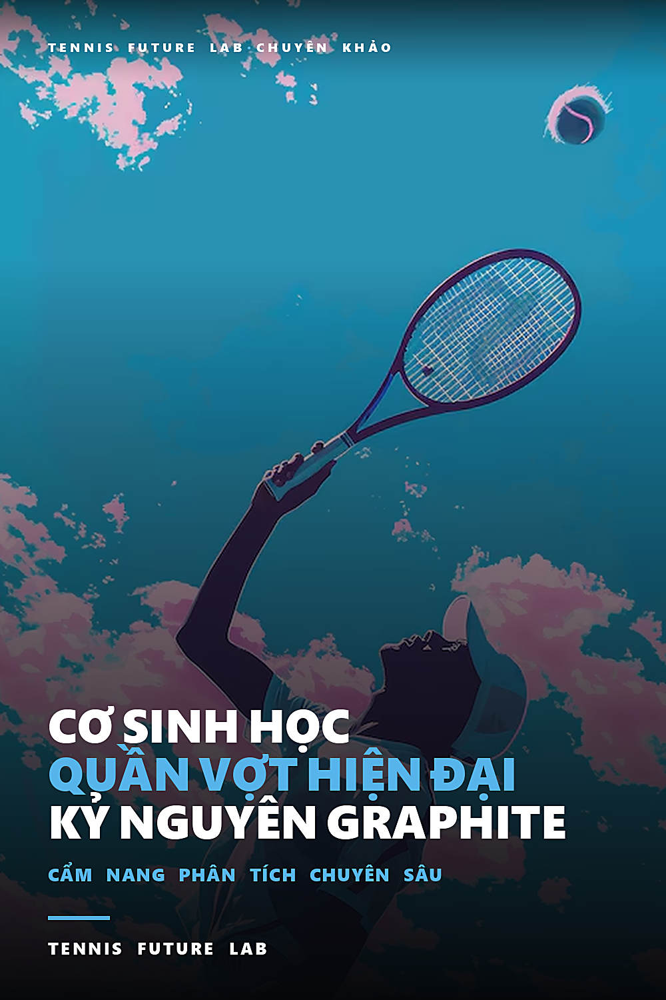

Cơ Sinh Học Quần Vợt Hiện Đại & Kỷ Nguyên Vợt Graphite · Cẩm Nang Phân Tích Chuyên Sâu
Chín mươi năm gỗ
Hãy cầm một cây vợt gỗ của thập niên 1960. Nó nặng gần gấp rưỡi cây vợt bạn đang dùng, và nặng theo kiểu khác hẳn: toàn bộ khối lượng dồn về phía đầu vợt, cảm giác như cầm một thanh gỗ đặc có chuôi. Mặt vợt chỉ rộng 65 inch vuông, tức khoảng 419 phân vuông — chưa bằng hai phần ba mặt vợt hiện đại. Và nếu bạn đặt ngón tay lên mặt lưới, bạn sẽ thấy vùng nảy tốt của nó bé đến mức đáng thương: khoảng 20 đến 25 phân vuông ở giữa, không hơn.
Pick up a wooden racket from the 1960s. It's almost half as heavy as the racket you're currently using, and it's heavy in a different way: all the weight is toward the head of the racket, it feels like holding a solid wooden stick with a handle. The racket's head is only 65 square inches, or about 419 square centimeters — less than two-thirds the size of a modern racket. And if you put your finger on the mesh, you'll see that its good bounce zone is pitifully small: about 20 to 25 square centimeters in the middle, no more.
Ấy vậy mà gần một thế kỷ, từ thập niên 1880 đến cuối thập niên 1970, môn quần vợt thi đấu được chơi bằng đúng thứ đó. Không phải vì ai cũng thích, mà vì chưa ai nghĩ ra cách khác.
Yet for nearly a century, from the 1880s to the late 1970s, competitive tennis was played with exactly that. Not because everyone likes it, but because no one has thought of another way.
Một cây vợt là chín lớp gỗ
Cây vợt gỗ tiêu biểu — Dunlop Maxply Fort, Wilson Jack Kramer — được ghép từ chín lớp gỗ mỏng: gỗ tần bì Anh, gỗ phong, gỗ óc chó. Người ta uốn từng lớp theo khuôn, phết keo, rồi ép dưới áp lực thủy lực rất lớn cho đến khi các lớp dính thành một khối. Sau đó là công đoạn của một người thợ thủ công: đục lỗ xâu dây, cân bằng lại, đánh bóng, dán nhãn.
Typical wooden racquets — Dunlop Maxply Fort, Wilson Jack Kramer — are assembled from nine thin layers of wood: English ash, maple, walnut. People bend each layer according to the mold, apply glue, and then press it under great hydraulic pressure until the layers stick into a block. Then comes the work of a craftsman: punching holes in the string, balancing, polishing, and labeling.
Mỗi cây vợt là một sản phẩm của tay nghề, không phải của dây chuyền. Hai cây cùng lô có thể lệch nhau vài chục gam và lệch cả điểm cân bằng. Vận động viên thời đó chọn vợt bằng cách cầm thử, chứ không đọc thông số.
Each racket is a product of craftsmanship, not of production. Two plants from the same lot can differ by several tens of grams and even the balance point. Athletes at that time chose rackets by trying them out, not reading the parameters.
Gỗ có trí nhớ, và trí nhớ của nó rất tệ
Vấn đề lớn nhất của gỗ không phải trọng lượng. Là độ ẩm. Gỗ hút nước, nở ra, rồi khô đi và co lại. Sau vài tuần, một cây vợt để trong cặp ngoài trời ẩm sẽ cong vênh, mặt vợt xoắn, và cú đánh bắt đầu lệch theo kiểu không thể sửa bằng kỹ thuật. Đó là lý do mỗi tay vợt thời đó sở hữu một chiếc kẹp gỗ bốn ốc vít, gọi là press: nhét vợt vào, siết bốn con ốc, và cây vợt được giữ thẳng cho đến trận sau.
The biggest problem with wood is not its weight. It's humidity. Wood absorbs water, expands, then dries and contracts. After a few weeks, a racquet left in a bag in humid weather will warp, the face will twist, and the shot will begin to misalign in ways that cannot be corrected with technique. That's why every tennis player at that time owned a four-screw wooden clamp, called a press: insert the racket, tighten the four screws, and the racket was held straight until the next match.
Bạn hãy hình dung hệ quả. Nếu cây vợt của bạn có thể cong đi vì trời mưa, thì mọi thứ khác phải được làm cứng lại để bù trừ. Cổ tay phải khóa tuyệt đối khi chạm bóng, vì chỉ cần mặt vợt lệch một chút là bóng đi sai hướng — không có vùng nảy rộng nào để tha thứ. Cú đánh phải tuyến tính: đưa vợt từ sau ra trước theo một đường thẳng, dùng cả thân người dồn vào bóng, chứ không thể dựa vào độ bật của khung.
Imagine the consequences. If your racket can bend in the rain, everything else has to stiffen to compensate. The wrist must be absolutely locked at impact, because even the slightest deviation of the racket face will send the ball going in the wrong direction — there is no wide bounce zone to forgive. The stroke must be linear: bring the racket from back to front in a straight line, using the whole body to focus on the ball, not relying on the bounce of the frame.
Vì sao không ai đổi?
Trong suốt chín mươi năm ấy, đã có người thử. Vợt thép xuất hiện từ thập niên 1920, nhẹ hơn và bền hơn, nhưng rung như dây đàn và làm tê cổ tay. Vợt nhôm thử nghiệm nhiều lần, đều thất bại vì khung quá cứng, truyền chấn động thẳng vào khuỷu.
During those ninety years, someone tried. Steel rackets appeared in the 1920s, were lighter and more durable, but vibrated like guitar strings and numbed the wrists. Aluminum rackets have been tested many times, but they all failed because the frame was too stiff, transmitting shock straight to the elbow.
Và có một lý do tinh tế hơn: cả nền kỹ thuật của môn thể thao này đã được xây trên giả định rằng vợt là một thanh gỗ nặng, nhỏ, và dễ hỏng. Kỹ thuật giao bóng, cách lên lưới, cách đứng đánh — tất cả đều tối ưu cho một cây vợt như thế. Đổi vợt không phải là đổi dụng cụ. Nó là đổi toàn bộ cách chơi.
And there's a more subtle reason: the entire technical foundation of this sport has been built on the assumption that the racket is a heavy, small, and fragile piece of wood. Serving technique, net play stance, hitting stance — all are optimal for such a racket. Changing rackets is not changing equipment. It changes the entire way of playing.
Thế nên khi thay đổi đến, nó không đến từ trong làng quần vợt. Nó đến từ một người chưa từng đánh quần vợt chuyên nghiệp, và từ một câu hỏi mà không ai trong làng buồn hỏi: nếu mặt vợt rộng hơn thì sao?
So when change comes, it doesn't come from within tennis. It came from someone who had never played tennis professionally, and from a question that no one in the village bothered to ask: what if the racket surface was wider?
Cú đấm vào hình học
Howard Head là kỹ sư hàng không. Ông từng làm việc trên máy bay vận tải trong Thế chiến thứ hai, và sau đó nổi tiếng vì một phát minh chẳng liên quan gì đến quần vợt: ván trượt tuyết bằng kim loại. Người ta gọi ông là người đã đưa hợp kim nhôm vào môn trượt tuyết.
Howard Head is an aeronautical engineer. He worked on transport planes during World War II, and later became famous for an invention that had nothing to do with tennis: the metal snowboard. People call him the man who introduced aluminum alloys into skiing.
Head chơi quần vợt ở trình độ nghiệp dư, và chơi dở. Nhưng ông có một thói quen nghề nghiệp mà những người chơi giỏi không có: khi thua, ông không hỏi mình sai ở đâu, mà hỏi dụng cụ sai ở đâu.
Head played tennis at the amateur level, and played it poorly. But he has a professional habit that good players don't have: when he loses, he doesn't ask where he went wrong, but where the equipment went wrong.
Câu trả lời ông tìm ra nằm ở một chỗ rất cụ thể: khi bóng chạm mặt vợt lệch khỏi tâm, cây vợt bị xoắn quanh trục dọc của nó. Mặt vợt quay đi, bóng bay sai hướng, và tay người chơi phải chịu một lực vặn ở cổ tay. Với mặt vợt 65 inch vuông, chỉ cần lệch hai phân là đủ để hỏng cú đánh.
The answer he found lies in a very specific place: when the ball hits the racket face off center, the racket is twisted around its vertical axis. The racket face turns away, the ball flies in the wrong direction, and the player's hand experiences a twist in the wrist. With a 65-inch square racket head, just two inches off is enough to ruin the shot.
Một công thức, không phải một cảm hứng
Khả năng chống xoắn của một vật quay quanh trục phụ thuộc vào mô-men quán tính, ký hiệu I, và với một khung vợt xấp xỉ như một vòng tròn bán kính r, nó tỉ lệ với bình phương bán kính nhân khối lượng: I ≈ m·r². Cái bình phương ấy là điểm mấu chốt. Kéo rộng đường kính mặt vợt lên gấp đôi thì khả năng chống xoắn tăng gấp bốn, với cùng một khối lượng.
The ability of an object rotating about its axis to resist torsion depends on the moment of inertia, denoted I, and for a racket frame approximately like a circle of radius r, it is proportional to the square of the radius times the mass: I ≈ m·r². That square is the key point. Doubling the diameter of the racket face quadruples the resistance to twisting, with the same weight.
Nói cách khác: cùng một cây vợt nặng như cũ, nếu làm mặt vợt rộng hơn, nó sẽ ổn định hơn khi bị đánh lệch tâm — mà không cần người chơi khỏe hơn. Đó không phải là một cải tiến về cảm giác. Đó là một phép tính.
In other words: the same heavy racket, if made wider, will make it more stable when hit off-center — without the player being stronger. It's not an improvement in feel. It's a calculation.
Năm 1976, Head đưa ra thị trường cây Prince Classic 110: mặt vợt 110 inch vuông, tức khoảng 710 phân vuông, khối lượng 330 đến 350 gam. Vùng nảy tốt mở rộng từ 20–25 phân vuông lên khoảng 90 phân vuông — hơn ba lần rưỡi. Cái tên "quá khổ" ra đời từ đó.
In 1976, Head introduced the Prince Classic 110 to the market: racket head 110 square inches, or about 710 square centimeters, weight 330 to 350 grams. The good bounce zone expands from 20–25 square centimeters to about 90 square centimeters — more than three and a half times. The name "oversized" was born from there.
Người ta gọi nó là trò lừa
Phản ứng đầu tiên của giới chuyên môn là chế giễu. Một cây vợt to như cái vợt đập ruồi, dùng cho người già và người mới chơi, không thể là quần vợt đỉnh cao. Các tạp chí viết rằng nó phá hỏng kỹ thuật. Các huấn luyện viên cấm học trò dùng.
The first reaction of experts was ridicule. A racket as big as a fly swatter, used for old people and beginners, cannot be top tennis. The magazines wrote that it ruined the technique. Coaches forbid students from using it.
Rồi đến US Open 1978. Pam Shriver, mười sáu tuổi, nghiệp dư, bước vào giải với cây Prince Classic 110 và lần lượt hạ những tên tuổi lớn nhất để vào chung kết. Cô thua trận cuối, nhưng thông điệp thì không thể rút lại: một cô gái mười sáu tuổi vừa vào chung kết một giải Grand Slam bằng một cây vợt mà cả làng gọi là đồ chơi.
Then came the 1978 US Open. Sixteen-year-old amateur Pam Shriver entered the tournament with a Prince Classic 110 and took down the biggest names to reach the final. She lost the final match, but the message could not be taken back: a sixteen-year-old girl had just reached the final of a Grand Slam tournament with a racket that the whole village called a toy.
Không ai tranh luận thêm về việc mặt vợt rộng có hiệu quả hay không. Cuộc tranh luận chuyển sang chỗ khác: rộng bao nhiêu thì còn kiểm soát được.
No one debates further whether a wide racket face is effective or not. The debate turns to another place: no matter how big it is, it's still controllable.
Điều Head không tính được
Có một cái giá. Mặt vợt rộng làm tăng mô-men quán tính quanh trục dọc, nhưng cũng làm tăng lực cản không khí và làm cây vợt khó xoay nhanh ở cự ly gần. Ở lưới, nơi bạn có khoảng bốn phần mười giây để phản ứng, một cây vợt quá khổ trở thành vật cản.
There is a price. The wide racket face increases the moment of inertia around the vertical axis, but also increases air resistance and makes it difficult for the racket to rotate quickly at close range. At net, where you have about four-tenths of a second to react, an oversized racket becomes an obstacle.
Và có một hệ quả sâu hơn mà thời đó chưa ai gọi tên: khi vùng nảy tốt rộng ra, người chơi không còn buộc phải khóa cứng cổ tay nữa. Cú đánh có thể lỏng hơn, muộn hơn, và vẫn vào sân. Kỹ thuật mà cả một thế hệ được dạy — khóa cổ tay, đánh thẳng, dồn cả thân người — bắt đầu mất đi lý do tồn tại.
And there was a deeper consequence that no one had named at that time: when the good bounce area broadened, players were no longer forced to lock their wrists. The shot can be looser, later, and still enter the field. The techniques that an entire generation had been taught — locking the wrists, hitting straight, pressing the entire body — began to lose their raison d'être.
Nhưng để đi đến đó cần một vật liệu khác. Nhôm đủ để chứng minh nguyên lý, không đủ để xây một nền quần vợt mới. Nhôm cứng, giòn, và truyền chấn động. Thứ đến sau nó mới là cái làm thay đổi mọi thứ.
But getting there requires a different material. Aluminum is enough to prove the principle, not enough to build a new tennis platform. Aluminum is hard, brittle, and transmits shock.
Kỷ nguyên graphite
Sợi carbon không phải vật liệu mới. Nó đã có trong ngành hàng không và trong các cuộc đua xe đạp từ thập niên 1960. Cái mới là cách người ta dùng nó để làm một cây vợt: không đúc thành khối, mà đan sợi theo hướng mong muốn rồi nướng trong khuôn nhựa epoxy.
What comes after it is what changes everything. Carbon fiber is not a new material. It has been used in aviation and bicycle racing since the 1960s.
Sự khác biệt này quan trọng hơn vẻ ngoài. Một thanh gỗ chỉ có một hướng chịu lực. Một khung sợi carbon thì có thể được thiết kế để cứng theo chiều xoắn nhưng mềm theo chiều uốn — tức là khung vẫn cong được ở thìa vợt khi vung, nhưng không bị vặn khi bóng chạm lệch tâm. Cây vợt lần đầu tiên có hai tính chất cơ học khác nhau ở hai chiều khác nhau.
What is new is the way it is used to make a racket: not molded into blocks, but woven in the desired direction and then baked in an epoxy resin mold. This difference is more important than appearance. A wooden bar has only one bearing direction. A carbon fiber frame can be designed to be torsionally stiff but flexible in flexion — meaning the frame still flexes at the blade when swinging, but doesn't twist when the ball hits off-center.
Hệ quả là khung vợt trở thành một bộ phận đàn hồi. Nó tích năng lượng khi bị uốn và trả lại khi bật ra. Đó chính là thứ mà vợt gỗ không bao giờ có.
The racket for the first time has two different mechanical properties in two different dimensions. As a result, the racket frame becomes an elastic part. It stores energy when it is bent and gives it back when it bounces off.
Hai cây vợt định hình hai lối chơi
Đầu thập niên 1980, hai sản phẩm gần như cùng lúc chia đôi thế giới quần vợt.
That is exactly what wooden rackets never have.
Cây thứ nhất là Prince Original Graphite, người chơi quen gọi là POG. Điểm đặc biệt của nó không nằm ở vật liệu mà ở một thanh giằng ngang nối hai bên hông vợt, đặt ngay dưới vùng nảy tốt. Thanh giằng ấy chia mặt vợt thành hai ô nhỏ, giảm độ võng của lưới ở giữa và làm mặt vợt ổn định hơn hẳn. Michael Chang và Andre Agassi lớn lên với cây vợt này.
In the early 1980s, two products almost simultaneously divided the tennis world in half. The first tree is Prince Original Graphite, known to players as POG. Its special feature lies not in the material but in a horizontal brace connecting the two sides of the racket, placed just below the good bounce zone. That brace divides the racket surface into two small cells, reducing the deflection of the net in the middle and making the racket surface more stable. Michael Chang and Andre Agassi grew up with this racket.
Cây thứ hai là Dunlop Max 200G, ra đời năm 1983. Thay vì đan sợi, Dunlop đúc khuôn một hỗn hợp nylon gia cường sợi carbon. Kết quả là một khung êm, đầm, hấp thụ chấn động rất tốt — cảm giác gần với gỗ hơn bất kỳ cây vợt nào khác thời đó. John McEnroe dùng nó. Steffi Graf dùng nó, và thắng hai mươi hai danh hiệu Grand Slam.
The second is the Dunlop Max 200G, released in 1983. Instead of weaving yarn, Dunlop molded a carbon fiber reinforced nylon composite. The result was a soft, compact frame that absorbed shock very well — a feel closer to wood than any other racket of the time. John McEnroe uses it. Steffi Graf used it, and won twenty-two Grand Slam titles.
Hai cây vợt, hai triết lý: một cái cứng và ổn định, một cái êm và đàn hồi. Cả hai đều không còn cần cổ tay khóa cứng. Và cả hai đều mở đường cho một lối chơi mà trước đó gần như không tồn tại: đứng cuối sân, đánh xoáy cuộn liên tục, chờ đối thủ sai trước.
Two rackets, two philosophies: one hard and stable, one smooth and elastic. Both no longer require locked wrists. And both paved the way for a style of play that had previously been almost non-existent: standing at the back of the court, spinning continuously, waiting for the opponent to make the first mistake.
Kỷ nguyên của người đứng cuối sân
Với vợt gỗ, lên lưới là lựa chọn hợp lý: bóng đi chậm, bạn có thời gian. Với khung carbon, quả bóng rời vợt nhanh hơn nhiều, và một cú xoáy cuộn mạnh có thể nảy cao quá tầm vô-lê. Lên lưới trở thành một canh bạc.
With a wooden racket, net play is a reasonable choice: the ball moves slowly, you have time. With a carbon frame, the ball leaves the racket much faster, and a strong spin can bounce well above volley. Net play becomes a gamble.
Thế hệ Agassi, Chang, Graf chuyển cả trận đấu về cuối sân. Từ đó đến nay, mô hình ấy gần như không đổi.
The generation of Agassi, Chang, and Graf moved the whole game to the back of the field. Since then, that model has remained almost unchanged.
Và rồi cả hai hãng đều thua
Có một nghịch lý đáng nhớ trong câu chuyện này. Dunlop và Prince là hai công ty phát minh ra cây vợt hiện đại. Cả hai đều mất vị thế thị trường vào tay những hãng đến sau.
There is a memorable paradox in this story. Dunlop and Prince are the two companies that invented the modern racket. Both lost their market position to latecomers.
Dunlop mắc kẹt với quy trình đúc khuôn đắt và chậm, trong khi đối thủ chuyển sang đan sợi — rẻ hơn, nhanh hơn, và dễ tùy biến độ cứng theo từng dòng vợt. Prince thì đi theo hướng ngược lại: sau thành công của dòng quá khổ, hãng đẩy mặt vợt rộng hơn nữa, đến mức vượt qua ngưỡng mà tay vợt chuyên nghiệp còn kiểm soát được, và mất dần chỗ đứng ở phân khúc thi đấu.
Dunlop stuck with an expensive and slow molding process, while its competitors turned to woven yarn — cheaper, faster, and easier to customize stiffness for each racquet line. Prince went in the opposite direction: after the success of the oversized line, the company pushed the racket surface even wider, to the point of exceeding the threshold that professional tennis players could still control, and gradually lost its foothold in the competition segment.
Bài học không nằm ở chuyện kinh doanh. Nằm ở chỗ: cả hai hãng đều tin rằng cái làm nên thành công của họ — mặt vợt rộng, khung đúc êm — là thứ cần được đẩy xa hơn. Trong khi thứ thực sự thay đổi cuộc chơi là một thứ khác: khả năng điều chỉnh độ cứng của khung theo từng vị trí, thứ mà chỉ công nghệ đan sợi mới làm được.
The lesson is not about business. The lie is that both companies believe that what made them successful — the wide racket face, the soft molded frame — is something that needs to be pushed further.
Thập niên 2000: khí động học và dây cước
Hai thập niên sau, cây vợt thay đổi thêm hai lần nữa, nhưng theo cách ít ồn ào hơn. Khung vợt được vát cạnh, thuôn ở phần cổ để giảm lực cản không khí khi vung nhanh. Và quan trọng hơn: dây cước chuyển từ ruột động vật và nylon tổng hợp sang polyester đồng trùng hợp, loại dây trơn, cứng, có khả năng trượt và bật lại cực nhanh.
While the real game-changer is something else: the ability to adjust frame stiffness by position, something only knitting technology can do. Two decades later, the racket changed twice more, but in a less noisy way. The racket frame is beveled and tapered at the neck to reduce air resistance when swinging quickly.
Chính sợi dây mới là thứ đẩy độ xoáy lên trên 3.200 vòng mỗi phút ở các cú đánh chuyên nghiệp. Cây vợt cho bạn khung; sợi dây cho bạn xoáy. Và xoáy là thứ đã định hình toàn bộ môn thể thao này trong hai mươi năm qua.
And more importantly: monofilament lines switched from animal gut and synthetic nylon to copolymerized polyester, which is smooth, stiff, capable of sliding and rebounding extremely quickly. It is the string that propels topspin above 3,200 revolutions per minute in professional shots. The racket gives you the frame; The rope gives you a spin.
Để hiểu vì sao một sợi dây có thể làm được việc đó, cần quay lại một khoảng thời gian rất ngắn: ba mili-giây.
And spin is what has shaped the entire sport over the past twenty years.
Bốn con số của một cây vợt
Một cây vợt hiện đại nặng 295 đến 320 gam. Cây vợt gỗ nặng 380 đến 410 gam. Nhìn vào hai con số đó, bạn sẽ nghĩ vợt bây giờ nhẹ hơn, nên dễ vung hơn. Nhưng nếu bạn cầm một cây vợt hiện đại đánh thử mười phút, có thể bạn sẽ thấy mỏi tay hơn cả cây vợt gỗ. Lý do: khối lượng không phải là thứ bạn cảm nhận.
To understand how a wire can do that, it's necessary to go back to a very short period of time: three milliseconds. A modern racket weighs 295 to 320 grams. The wooden racket weighs 380 to 410 grams. Looking at those two numbers, you would think that the racket is now lighter, so it is easier to swing. But if you hold a modern racket for ten minutes, you will probably feel more tired than a wooden racket.
Có bốn con số quyết định cách một cây vợt hành xử. Bốn con số ấy không độc lập với nhau, và đó là toàn bộ vấn đề.
The reason: mass is not something you perceive. There are four numbers that determine how a racket behaves.
Một: khối lượng tĩnh
Đây là con số bạn đọc trên bao bì, đo bằng cân. Nó quyết định cảm giác cầm và mức mỏi vai sau ba set. Nhưng nó gần như không nói gì về cảm giác khi vung.
Those four numbers are not independent of each other, and that's the whole problem. This is the number you read on the packaging, measured with a scale. It determines the feeling of grip and the level of shoulder fatigue after three sets.
Hai: trọng lượng vung
Trọng lượng vung là khối lượng quán tính của cây vợt quanh điểm bạn cầm — tức là cái mà cánh tay bạn thực sự phải xoay. Nó phụ thuộc vào khối lượng và vào chỗ khối lượng ấy nằm, theo đúng quan hệ bình phương bán kính mà Howard Head đã dùng: cùng một khối lượng, đặt xa tay hơn thì nặng hơn khi vung, theo cấp số nhân.
But it says almost nothing about how it feels when swung. Swing weight is the inertial mass of the racket around the point of your grip — that is, what your arm actually has to swing.
Đây là con số quyết định cảm giác "cây vợt đầm hay nhẹ". Máy đo chuyên dụng cho ra một số, và cách đọc thực dụng như sau: dưới 310 là vợt xoay nhanh, phù hợp lưới và phòng thủ; 310 đến 320 là vùng cân bằng cho hầu hết người chơi; trên 330 là vợt nặng — nó nghiền được quả bóng nặng của đối thủ mà không rung, nhưng bạn phải có kỹ thuật để vung nó suốt hai giờ.
It depends on the mass and where that mass is located, according to the square radius relationship that Howard Head used: the same mass, placed further away from the hand, is heavier when swung, exponentially. This is the number that determines the feeling of "a compact or light racket".
Hai cây vợt cùng nặng 305 gam có thể có trọng lượng vung lệch nhau ba mươi đơn vị. Đó là lý do hai cây vợt "giống nhau về thông số" lại cho cảm giác hoàn toàn khác.
A specialized meter gives a number, and the practical reading is as follows: below 310, the racket rotates quickly, suitable for nets and defense; 310 to 320 is the balance zone for most players; above 330 is a heavy racket — it crushes your opponent's heavy ball without vibrating, but you have to have the technique to swing it for two hours. Two racquets weighing 305 grams can have a swing weight difference of
Ba: điểm cân bằng
Điểm cân bằng cho biết khối lượng dồn về đâu. Người ta đo từ chuôi lên và quy đổi thành số điểm lệch về phía đầu hoặc phía chuôi. Một cây vợt nhẹ đầu, khoảng 4 đến 8 điểm, với điểm cân bằng cách chuôi 31,5 phân, sẽ cho cảm giác đầu vợt nhẹ, xoay cực nhanh, và dễ tăng tốc trong khoảng không gian ngắn.
thirty units. That's why two rackets "similar in parameters" feel completely different. The equilibrium point shows where the mass is concentrated.
Ngược lại, vợt nặng đầu cho cú đánh xuyên hơn mà không cần vung nhanh. Nhưng nó lấy đi thời gian phản ứng — thứ mà bạn cần nhất ở lưới.
People measure from the shank up and convert it into the number of points deflected towards the head or shank. A light racket, about 4 to 8 points, with a balance point 31.5 centimeters from the grip, will give the feeling of a light racket head, extremely fast rotation, and easy acceleration in a short space.
Bốn: độ cứng khung
Độ cứng được đo bằng một chỉ số gọi là RA, thang từ khoảng 55 đến 75. Khung cứng, chỉ số 68, trả lực rất mạnh: bóng đi nhanh mà bạn không phải làm gì nhiều. Nhưng nó cũng truyền chấn động vào khuỷu và cổ tay, và nó tha thứ ít hơn với cú đánh lệch tâm.
On the contrary, head-heavy rackets give more penetrating shots without needing to be swung quickly. But it takes away reaction time — what you need most at the net. Stiffness is measured by an index called RA, which ranges from about 55 to 75.
Khung mềm hơn uốn nhiều hơn, giữ bóng lâu hơn trên mặt lưới, cho cảm giác kiểm soát tốt hơn — nhưng đòi hỏi bạn tự tạo lực.
A stiff frame, indexed at 68, returns very strong force: the ball goes fast without you having to do much.
Vì sao không thể chỉ tăng một con số
Đây là phần mà hầu hết người chơi bỏ qua. Bạn không thể thêm khối lượng vào đầu vợt để tăng lực mà không đồng thời tăng trọng lượng vung, dịch điểm cân bằng về phía đầu, và thay đổi cảm giác xoay. Mỗi lần điều chỉnh là một lần đánh đổi.
But it also transmits shock to the elbow and wrist, and it's less forgiving of off-center hits. A softer frame offers more flex, keeps the ball on the net longer, gives a greater feeling of control — but requires you to apply your own pressure. This is the part that most players skip.
Ba vị trí dán băng chì cho ba kết quả khác nhau, và đây là kiến thức thực dụng nhất trong chương này:
You can't add mass to the head of the racket to increase power without also increasing swing weight, shifting the balance point toward the head, and changing the feel of the swing.
- Ở đỉnh đầu vợt (12 giờ): tăng lực đập mạnh nhất, vì khối lượng nằm xa trục xoay nhất. Đổi lại, vợt chậm hơn rõ rệt khi phòng thủ.
- Ở hai bên hông (3 và 9 giờ): mở rộng vùng nảy tốt và tăng khả năng chống xoắn khi bóng lệch tâm, mà gần như không làm chậm cú vung. Đây là vị trí hiệu quả nhất trên mỗi gam chì bỏ ra.
- Trong chuôi vợt: tăng khối lượng tổng nhưng kéo điểm cân bằng về phía tay, cho cảm giác đầm và êm. Cú đánh không mạnh hơn, nhưng tay ít rung hơn.
Người chơi nghiệp dư thường dán chì ở đỉnh đầu vì nghĩ rằng thêm lực là thêm uy lực. Thực tế, phần lớn lại thấy cú đánh tệ đi trong hai tuần đầu — vì họ mất tốc độ đầu vợt, mà tốc độ đầu vợt mới là thứ tạo ra xoáy và độ sâu.
Each adjustment is a trade-off. Three locations for applying lead tape give three different results, and this is the most practical knowledge in this chapter:
Và đây là điều đáng nhớ nhất: bốn con số này mô tả cây vợt, không mô tả cú đánh. Một cây vợt có thông số hoàn hảo trong tay một người vung sai thì vẫn là một cây vợt sai.
Amateur players often put lead on the top of their heads because they think that more force means more power. In fact, most find their shots get worse in the first two weeks — because they lose racket head speed, which is what creates spin and depth.
Cán vợt tám cạnh
Cầm vợt thẳng đứng trước mặt, mặt vợt vuông góc với sàn, rồi nhìn vào đáy chuôi. Bạn sẽ thấy không phải một hình tròn mà một hình tám cạnh. Tám mặt phẳng nhỏ ấy là toàn bộ hệ thống định vị của bàn tay.
And here's the most memorable thing: these four numbers describe the racket, not the shot. A racket with perfect parameters in the hands of someone who swings it wrong is still a wrong racket. Hold the racket upright in front of you, the racket surface perpendicular to the floor, then look at the bottom of the grip.
Người ta đánh số tám cạnh theo chiều kim đồng hồ, bắt đầu từ mặt phẳng nằm trên cùng khi vợt dựng đứng. Cạnh 1 ở trên, cạnh 2 ở góc trên bên trái, cạnh 3 ở mặt trái, cạnh 4 ở góc dưới bên trái, cạnh 5 ở dưới, và cứ thế. Mỗi kiểu cầm được xác định bằng một câu trả lời duy nhất: khớp gốc của ngón trỏ đặt lên cạnh nào.
You will see not a circle but an eight-sided shape. Those eight small planes are the entire positioning system of the hand. The eight sides are numbered clockwise, starting from the top plane when the racket is upright.
Đó là lý do tám cạnh quan trọng đến vậy. Chúng biến một việc rất khó mô tả — "cầm sao cho đúng" — thành một việc có thể kiểm tra được trong hai giây, và có thể lặp lại giống hệt nhau ở mọi lần cầm.
Edge 1 is on top, edge 2 is on the top left corner, edge 3 is on the left side, edge 4 is on the bottom left corner, edge 5 is on the bottom, and so on. Each grip is determined by a single answer: which side the base joint of the index finger rests on.
Cạnh 2: kiểu lục địa
Đặt khớp gốc ngón trỏ lên cạnh 2. Nếu làm đúng, bạn sẽ thấy như đang cầm một cái búa nhỏ, hoặc như đang bắt tay với cán vợt. Mặt vợt hơi mở so với mặt sàn.
That's why the eight sides are so important. They turn something that's difficult to describe — "holding it right" — into something that can be tested in two seconds, and can be repeated exactly the same every time. Place the base of your index finger on edge 2.
Đây là kiểu cầm đa năng nhất trong quần vợt. Nó dùng được cho giao bóng, vô-lê, đập trên đầu, cắt bóng và bỏ nhỏ — gần như mọi cú đánh mà bóng đến từ trên cao hoặc bạn cần đưa mặt vợt mở. Lý do: với kiểu cầm này, cổ tay có thể xoay theo cả hai chiều mà không bị giới hạn, nên bạn vừa cắt được vừa xoáy được.
If done correctly, you will feel like you are holding a small hammer, or like you are shaking hands with the handle of a racket. The racket face is slightly open compared to the floor. This is the most versatile grip in tennis.
Nhược điểm: nó không phải kiểu cầm tự nhiên cho cú thuận tay cao. Người mới học thường bị đau cổ tay khi cố đánh thuận tay bằng cạnh 2 ở tầm bóng cao.
It works for serve, volley, overhead smash, chop and drop — almost any shot where the ball comes from above or where you need to get the racket face open. Reason: with this grip, the wrist can rotate in both directions without restriction, so you can both cut and spin.
Cạnh 3: kiểu đông phương
Đặt lòng bàn tay áp phẳng sau cán vợt, khớp gốc ngón trỏ rơi vào cạnh 3. Mặt vợt gần như thẳng đứng. Đây là kiểu cầm mà hầu hết người chơi phong trào Việt Nam đang dùng, thường là do được dạy từ đầu và không bao giờ đổi.
Disadvantage: it is not a natural grip for a high forehand. Beginners often experience wrist pain when trying to hit the forehand with side 2 at high ball range. Place your palm flat behind the racket handle, the base of the index finger falls on edge 3.
Nó cho cú đánh phẳng rất mạnh, đường bóng căng, xuyên sân. Điểm tiếp xúc tự nhiên ở ngang tầm hông. Nhưng nó cũng là kiểu cầm khó tạo xoáy cuộn: mặt vợt đi qua bóng theo chiều ngang, nên bóng bay phẳng và rơi xuống nhờ trọng lực chứ không nhờ xoáy.
The racket face is almost vertical. This is the grip style that most Vietnamese movement players are using, usually because they were taught from the beginning and never changed. It gives a very strong flat shot, a tight ball path, and a cross-court path.
Với vợt gỗ, đó là kiểu cầm hợp lý. Với khung carbon hiện đại, nó là kiểu cầm khiến người chơi đánh bóng thường xuyên dài hoặc rúc lưới, vì không có xoáy để kéo bóng xuống trong sân.
The natural contact point is at hip level. But it is also a difficult grip to create spin: the racket surface passes over the ball horizontally, so the ball flies flat and falls thanks to gravity, not spin.
Cạnh 4: kiểu bán tây
Xoay thêm một cạnh: khớp gốc ngón trỏ lên cạnh 4, lòng bàn tay úp nhiều hơn. Đây là kiểu cầm phổ biến nhất của quần vợt hiện đại, và gần như mặc định ở các học viện.
With a wooden racket, that is a reasonable grip. With a modern carbon frame, it is a grip that causes players to frequently hit the ball long or close to the net, as there is no spin to pull the ball down the court.
Lý do rất thực dụng: nó đặt mặt vợt ở tư thế tự nhiên để đi từ thấp lên cao qua bóng. Bạn không phải cố tạo xoáy — cú vung tự nhiên đã tạo ra nó. Bóng cuộn qua lưới với biên an toàn lớn hơn nhiều, rồi cắm xuống trong sân đối phương.
Rotate one more edge: joint the base of the index finger up to edge 4, palm facing more. This is the most common grip in modern tennis, and is almost the default in academies. The reason is very pragmatic: it puts the racket face in a natural position to go from low to high through the ball.
Cái giá là tầm bóng thấp. Bóng thấp ngang đầu gối, đặc biệt trên sân cỏ hoặc khi đối thủ cắt bóng, trở nên khó xử lý vì mặt vợt đã đóng sẵn.
You don't have to try to create spin — your natural swing creates it. The ball rolls over the net with a much larger margin of safety, then lands in the opponent's court.
Cạnh 5: kiểu tây
Xoay thêm một cạnh nữa, lòng bàn tay gần như úp hoàn toàn xuống sàn. Kiểu cầm này cho độ xoáy lớn nhất và là công cụ của những người đánh bóng nảy cao trên sân đất nện. Nhưng nó gần như vô dụng với bóng thấp, và đòi hỏi cổ tay rất khỏe.
The price is the low ball range. Knee-high balls, especially on grass or when the opponent cuts the ball, become difficult to handle because the racket is closed. Turn one more edge, palm almost completely facing the floor.
Điều thực sự cần nhớ
Kiểu cầm không phải là sở thích. Nó quyết định tầm bóng mà bạn đánh tốt nhất, và tầm bóng ấy quyết định bạn sẽ chơi theo lối nào. Một người cầm cạnh 4 sẽ tự nhiên thích bóng cao và đánh xoáy. Một người cầm cạnh 3 sẽ tự nhiên thích bóng ngang hông và đánh phẳng. Cả hai đều có thể chơi tốt — nhưng không phải với cùng một chiến thuật.
This grip gives the most spin and is a tool for high-bounce hitters on clay courts. But it's almost useless against low balls, and requires very strong wrists. Grip style is not a preference. It determines the range at which you are best at hitting the ball, and that range determines which way you will play. A player holding the side 4 will naturally like the ball to be high and spin.
Và có một chi tiết nhỏ mà ít người để ý: khi bạn đổi kiểu cầm, bạn phải đổi cả điểm tiếp xúc. Cầm cạnh 4 mà vẫn đón bóng ngang hông như cạnh 3 thì bóng sẽ luôn đi dài. Điểm tiếp xúc phải dời về phía trước, cao hơn, và xa thân hơn.
A person holding side 3 will naturally prefer the ball to be at hip level and hit it flat. Both can play well — but not with the same strategy. And there is a small detail that few people pay attention to: when you change the grip style, you must also change the contact point.
Ba mili-giây của dây cước
Quả bóng chạm mặt lưới trong khoảng ba mili-giây. Trong ba mili-giây ấy, có hai việc xảy ra gần như đồng thời: mặt lưới lún vào, và các sợi dọc trượt ngang.
Holding side 4 and still catching the ball at hip level like side 3, the ball will always go long. The contact point should move forward, higher, and farther from the body.
Việc thứ hai mới là điều đáng nói. Khi bóng chạm mặt vợt ở một góc, các sợi dọc bị đẩy sang một bên, trượt trên các sợi ngang, và tích lại thế năng như một sợi dây cao su bị kéo. Rồi chúng bật trở lại vị trí cũ với tốc độ rất cao. Trong lúc bật về, chúng miết vào mặt bóng và tạo ra xoáy.
The ball hits the net in about three milliseconds. During those three milliseconds, two things happen almost simultaneously: the mesh surface sinks in, and the warp threads slide horizontally. The second thing is worth mentioning. When the ball hits the racket face at an angle, the warp threads are pushed aside, slide over the weft threads, and accumulate potential energy like a rubber band being pulled.
Nghĩa là: phần lớn độ xoáy trong quần vợt hiện đại không đến từ việc bạn "vuốt" bóng lên. Nó đến từ việc mặt lưới tự bật trả. Bạn chỉ cần đưa mặt vợt đi qua bóng theo một góc nghiêng phù hợp, và để sợi dây làm phần còn lại.
Then they bounce back to their original position at very high speed. While rebounding, they rub against the surface of the ball and create spin. Meaning: most of the spin in modern tennis doesn't come from you "stroking" the ball.
Đó là lý do tại sao cây vợt hiện đại cho phép cú đánh lỏng hơn nhiều so với thời vợt gỗ. Với dây ruột, sợi dây trượt kém, bật trả yếu, và người chơi buộc phải tự tạo xoáy bằng cổ tay. Với dây tổng hợp cứng và trơn, mặt lưới gần như là một cái lò xo được nạp sẵn.
It comes from the mesh rebounding on its own. You just need to pass the racket over the ball at the right angle, and let the string do the rest. That's why modern racquets allow for much looser strokes than they did in the days of wooden racquets.
Vì sao dây trơn lại xoáy hơn dây nhám
Nghe có vẻ ngược. Dây nhám thì bám bóng hơn, đúng không?
With gut strings, the string slides poorly, bounces back weakly, and the player is forced to create spin with their wrists. With its stiff, smooth synthetic rope, the mesh is almost like a pre-loaded spring.
Không hẳn. Dây nhám bám bóng tốt trong khoảnh khắc đầu, nhưng nó không trượt được, nên không tích được thế năng, nên không bật trả. Dây trơn trượt xa hơn, tích nhiều năng lượng hơn, và cú bật trả mạnh hơn — đủ để thắng phần ma sát mà dây nhám có được. Đó là lý do dây polyester trơn, cứng, đã thay thế gần như hoàn toàn dây ruột và dây nylon mềm ở trình độ cao.
It sounds backwards. Rough wire is more shiny, right? Not necessarily. The rough string grips the ball well in the first moment, but it cannot slide, so it cannot accumulate potential energy, so it cannot bounce back.
Mật độ đan: 16 dọc, 19 ngang
Hai con số này là số sợi dọc và số sợi ngang. Mật độ mở, ví dụ 16 dọc và 19 ngang, cho các sợi dây nhiều khoảng trống để trượt, nên bật trả mạnh, bóng cắn sâu và góc bắn cao hơn. Đó là cấu hình hỗ trợ xoáy tốt nhất.
Smooth strings slide farther, store more energy, and bounce back stronger — enough to overcome the friction that rough strings provide. That's why smooth, hard polyester strings have almost completely replaced gut strings and soft nylon strings at a high level. These two numbers are the number of warp threads and the number of weft threads.
Mật độ kín, ví dụ 18 dọc và 20 ngang, hạn chế sợi dây trượt. Bóng đi phẳng hơn, đường bay thấp hơn, và kiểm soát chính xác đến từng phân. Đó là lựa chọn của những người đánh phẳng, đánh sớm, hoặc chơi trên sân cỏ.
Opening density, for example 16 vertical and 19 horizontal, gives the strings more room to slide, resulting in strong rebound, deep bite and higher shooting angle. It is the best spin support configuration. Tight density, for example 18 vertical and 20 horizontal, limits rope slippage.
Không có cấu hình nào tốt hơn. Có cấu hình khớp với cú đánh của bạn.
The ball travels flatter, has a lower flight, and is controlled with every inch of precision. It is the choice of those who hit flat, hit early, or play on grass.
Lực căng: con số đang giảm dần
Ba mươi năm trước, người ta căng vợt ở 60 đến 65 pound. Ngày nay, phần lớn tay vợt chuyên nghiệp căng trong khoảng 46 đến 52 pound, và một số xuống dưới 45.
There is no better configuration. Get a configuration that matches your swing.
Lý do không phải là họ thích cảm giác mềm. Là vì lực căng thấp cho phép mặt lưới lún sâu hơn khi bóng chạm — bóng được "giữ" trên mặt vợt lâu hơn một chút, và sợi dây có nhiều biên độ hơn để trượt và bật trả. Cả hai đều làm tăng xoáy.
Thirty years ago, people strung their racquets at 60 to 65 pounds. Today, most professional tennis players weigh between 46 and 52 pounds, and some go under 45. The reason is not that they like the soft feeling.
Cái giá của lực căng thấp là kiểm soát. Mặt lưới lún sâu thì bóng bắn ra theo hướng khó đoán hơn, đặc biệt khi bạn đánh lệch tâm hoặc đỡ một cú bóng nặng. Vì thế tay vợt chuyên nghiệp căng thấp nhưng đánh rất nhiều xoáy — xoáy chính là thứ giữ bóng trong sân khi lực căng thấp.
That's because low tension allows the net to sink deeper when the ball hits — the ball is "held" on the racket a little longer, and the string has more room to slide and rebound. Both increase spin. The price of low tension is control.
Thứ tự ưu tiên khi chọn dây
Nếu bạn chỉ có thể nhớ một điều từ chương này, hãy nhớ thứ tự sau. Đầu tiên là độ bền: dây gãy giữa trận thì mọi thứ khác vô nghĩa. Thứ hai là cảm giác: nếu bạn không cảm được bóng trên mặt lưới, bạn sẽ không bao giờ điều chỉnh được độ sâu. Thứ ba mới là độ xoáy. Và cuối cùng là lực căng — thứ mà người chơi phong trào thay đổi nhiều nhất, trong khi nó ảnh hưởng ít nhất.
If the net sinks deeper, the ball will shoot out in a more unpredictable direction, especially when you hit off-center or block a heavy shot. So professional tennis players tension low but hit a lot of spin — spin is what keeps the ball in the court when tension is low. If you can only remember one thing from this chapter, remember the following order. First is durability: if the wire breaks in the middle of a battle, everything else is meaningless. The second is feel: if you can't feel the ball on the net, you will never be able to adjust the depth.
Có một sự thật ít được nói: phần lớn người chơi phong trào đổi dây quá muộn. Dây polyester mất đi khả năng bật trả sau khoảng mười đến mười lăm giờ đánh, trong khi vẫn trông nguyên vẹn. Bạn tiếp tục chơi với một mặt lưới đã chết, cảm thấy bóng đi thiếu lực, và nghĩ rằng mình đang đánh sai. Thường thì không phải.
Third is spin. And finally there's tension — what players' movement changes the most, while it affects the least. There is a truth that is rarely said: most players change strings too late. The polyester string loses its rebound ability after about ten to fifteen hours of beating, while still remaining intact.
Bảy mắt xích
Khi bạn xem một cú thuận tay của tay vợt chuyên nghiệp quay chậm, điều gây ấn tượng thường là tốc độ đầu vợt. Nhưng tốc độ ấy không phải là thứ được tạo ra ở cánh tay. Nó là kết quả cuối cùng của một chuỗi bảy chặng, và mỗi chặng chỉ làm được việc của nó nếu chặng trước đã hoàn thành đúng lúc.
You continue to play with a dead net, feel the ball lacks power, and think you're making a mistake. Usually it's not. When you watch a professional tennis player's forehand in slow motion, what's impressive is often the speed of the racket head.
Bảy chặng ấy, theo thứ tự:
But that speed is not something created in the arm.
- Mặt đất. Chân đạp xuống sàn, và sàn đẩy ngược trở lại. Đây là nguồn lực duy nhất mà cơ thể bạn có — mọi thứ khác chỉ là chuyển tiếp.
- Đầu gối. Đầu gối gập rồi duỗi, biến lực thẳng đứng thành lực đẩy thân người lên và tới.
- Hông và xương chậu. Hông xoay quanh trục dọc. Đây là chặng tạo ra phần lớn mô-men xoay của cú đánh.
- Thân trên và vai. Thân trên xoay tiếp, nhưng chậm hơn hông một nhịp — chính độ trễ này mới là thứ tạo ra gia tốc.
- Khớp vai trong. Cánh tay xoay trong quanh trục của nó, đưa cùi chỏ lên và ra trước.
- Cẳng tay và cùi chỏ. Cẳng tay duỗi ra, tăng bán kính quay và do đó tăng tốc độ đầu vợt.
- Cổ tay bung tại điểm chạm. Đây là chặng cuối, và nó không phải là một động tác chủ động — nó là hệ quả của sáu chặng trước.
Điểm mấu chốt nằm ở chữ "trễ". Nếu cả bảy chặng xảy ra cùng lúc, bạn có một cú đẩy. Nếu chúng xảy ra lần lượt, mỗi chặng chậm hơn chặng trước một chút, bạn có một cú quất. Đó là toàn bộ khác biệt giữa một cú đánh mạnh và một cú đánh nhanh.
It is the end result of a series of seven stages, and each stage can only do its job if the previous stage has been completed in time. Those seven stages, in order: The key point lies in the word "late". If all seven legs happen at the same time, you have a push. If they happen one after the other, each leg a little slower than the last, you have a whiplash.
Hiệu ứng roi quất
Khung vợt hiện đại không chỉ truyền lực — nó tích lực. Trong khoảng mười lăm phần trăm cuối của cú vung, khung vợt bị uốn cong rồi bật thẳng lại, và đầu vợt vọt lên với tốc độ có thể vượt 120 dặm một giờ ở trình độ chuyên nghiệp. Đó là lý do cú đánh hiện đại trông như vợt tự bắn ra khỏi tay.
That's the whole difference between a hard hit and a quick hit. The modern racket frame doesn't just transmit force — it stores force. During the last fifteen percent of the swing, the racket's frame flexes and then straightens, and the racket head shoots up at a speed that can exceed 120 miles per hour at the professional level. That's why the modern shot looks like the racket shoots itself out of the hand.
Với vợt gỗ, hiện tượng này gần như không tồn tại. Khung gỗ không đàn hồi theo chiều dọc, nên nó chỉ truyền lực tuyến tính: bạn đẩy bao nhiêu thì bóng đi bấy nhiêu, và tốc độ đầu vợt dừng ở khoảng 65 đến 75 dặm một giờ. Muốn bóng nhanh hơn, cách duy nhất là dồn cả thân người vào bóng, đúng như những gì các tay vợt thời đó được dạy.
With wooden rackets, this phenomenon is almost non-existent. The wooden frame is not vertically elastic, so it only transmits force linearly: the more you push, the more the ball moves, and the racket head speed stops at about 65 to 75 miles per hour. If you want the ball to be faster, the only way is to put your whole body on the ball, just like what tennis players at that time were taught.
Vì sao người mới chơi không dùng được chuỗi này
Hầu hết người mới bắt đầu cú đánh từ cánh tay. Họ thấy bóng, họ vung tay. Bảy chặng phía dưới — chân, gối, hông — gần như không tham gia, nên cú đánh chỉ có phần lực của một cánh tay. Cú đánh ấy có thể vào sân, nhưng nó không bao giờ nặng.
Most beginners start their swing from the arms. They see the ball, they swing their arms. The lower seven legs — legs, knees, hips — are barely involved, so the shot has only the force of one arm. That hit may hit the field, but it is never heavy.
Vấn đề thứ hai là thời điểm. Chuỗi này cần khoảng bốn phần mười giây để hoàn thành. Nếu bạn bắt đầu xoay hông khi bóng đã ở gần, chặng thứ ba sẽ không kịp truyền lực cho chặng thứ bảy, và cú đánh bị "gãy" ở giữa. Đó là cảm giác rất quen thuộc: bạn vung hết sức mà bóng vẫn đi thiếu.
The second problem is timing. This sequence takes about four-tenths of a second to complete. If you start rotating your hips when the ball is close, the third leg won't have time to transfer power to the seventh leg, and the shot will "break" in the middle. It's a very familiar feeling: you swing with all your might but the ball still misses.
Vì vậy, bài tập đúng không phải là tập vung mạnh hơn. Là tập bắt đầu sớm hơn. Và cách dễ nhất để kiểm tra là đếm: nếu bạn có thể nói "một" lúc bóng rời vợt đối thủ và "hai" lúc bạn bắt đầu xoay hông, thì bạn đang đi đúng nhịp.
Therefore, the correct exercise is not to swing harder. Is the episode starting earlier. And the easiest way to check is to count: if you can say "one" when the ball leaves your opponent's racket and "two" when you start to rotate your hips, then you're on the right rhythm.
Một lưu ý về thứ tự tập
Đừng tập cả bảy chặng cùng lúc. Người ta thường mắc lỗi này sau khi đọc một chương như chương này: cố gắng kiểm soát mọi khớp, và kết quả là cú đánh cứng đờ như một robot.
Don't practice all seven stages at the same time. People often make this mistake after reading a chapter like this one: trying to control every joint, and the result is a stiff, robotic shot.
Trình tự hợp lý là từ dưới lên. Đầu tiên chỉ tập đạp chân và xoay hông, để cánh tay buông lỏng hoàn toàn. Khi hông đã tự động xoay đúng lúc, thêm thân trên. Khi thân trên đã nối được với hông, thêm cánh tay. Chặng cuối — cổ tay bung — thường tự xuất hiện khi sáu chặng trước đã đúng, và nếu bạn cố tình bung cổ tay thì gần như chắc chắn sẽ bung sai lúc.
The logical sequence is from the bottom up. First, just practice kicking your legs and rotating your hips, letting your arms relax completely. Once the hips have automatically rotated at the right time, add the upper body. Once the upper body is connected to the hips, add the arms. The final step — the wrist release — usually appears by itself when the previous six steps are correct, and if you intentionally release the wrist, it will almost certainly release at the wrong time.
Cú thuận tay
Cú thuận tay hiện đại bắt đầu trước khi bóng bay tới. Nó bắt đầu vào khoảnh khắc bóng rời vợt đối phương, và nó bắt đầu bằng vai.
The modern forehand starts before the ball arrives. It starts the moment the ball leaves the opponent's racket, and it starts with the shoulder.
Động tác ấy gọi là xoay thân sớm: xoay vai và hông khoảng chín mươi độ ngay khi bạn nhận ra bóng sẽ đi về phía nào. Tay không thuận duỗi ngang, chỉ về phía bóng, làm hai việc cùng lúc — giữ thăng bằng và đo khoảng cách. Đầu vợt dựng lên. Toàn bộ cơ thể đã ở tư thế nạp, trong khi bóng còn đang bay qua lưới.
This is called early rotation: turn your shoulders and hips about ninety degrees as soon as you realize which way the ball is going. The non-dominant hand is stretched horizontally, pointing toward the ball, doing two things at once — maintaining balance and measuring distance. The racket head is up. The entire body is in a loading position, while the ball is still flying over the net.
Đây là chỗ mà hầu hết người chơi phong trào mất cú đánh. Không phải ở cú vung, mà ở chỗ họ bắt đầu vung khi bóng đã sang bên này lưới. Lúc ấy không còn thời gian để xoay thân, nên họ chỉ có thể vung tay.
This is where most movement players lose their strokes. Not in the swing, but in the fact that they start swinging when the ball has gone to this side of the net. At that time, there was no time left to rotate their bodies, so they could only swing their arms.
Điểm tiếp xúc phía trước
Cú thuận tay hiện đại đón bóng ở phía trước thân, ngang tầm hông đến eo, và xa thân hơn so với cú đánh phẳng cổ điển. Không phải vì tư thế ấy đẹp, mà vì nó cho phép cánh tay duỗi ra đúng lúc — và duỗi ra là điều kiện để tăng tốc độ đầu vợt ở chặng cuối của chuỗi truyền lực.
The modern forehand catches the ball in front of the body, at hip-to-waist level, and farther from the body than the classic flat stroke. Not because the position is beautiful, but because it allows the arms to stretch at the right time — and stretching is a condition for increasing racket head speed at the end of the power transmission chain.
Nếu bạn đón bóng ngang thân hoặc sau thân, cùi chỏ bị kẹt vào sườn. Cú đánh trở thành một cú đẩy bằng cẳng tay, mất phần lớn lực xoay từ hông. Bóng đi thiếu độ sâu, và bạn có cảm giác phải cố thêm — nên bạn vung mạnh hơn, và càng sai.
If you catch the ball across or behind your body, your elbow will get stuck in your ribs. The strike becomes a thrust with the forearm, losing most of the rotation from the hips. The ball lacks depth, and you feel like you have to try harder — so you swing harder, and the more wrong you are.
Một cách kiểm tra đơn giản: sau khi đánh, nếu bạn nhìn xuống và thấy bàn chân trước của mình vẫn ở phía sau điểm tiếp xúc, thì bạn đã đón bóng muộn. Trọng tâm phải dồn về chân trước trước khi bóng tới, không phải sau đó.
A simple test: after hitting, if you look down and see your front foot is still behind the point of contact, you are late catching the ball. The weight should be on the front foot before the ball arrives, not after.
Cổ tay: khóa hay mở
Đây là chỗ mà kiến thức cũ và mới xung đột rõ nhất, và cũng là chỗ dễ hiểu sai nhất.
This is where old and new knowledge conflict most clearly, and is also where it is easiest to misunderstand.
Với vợt gỗ, cổ tay phải khóa tuyệt đối. Khung nhỏ, vùng nảy tốt hẹp, nên bất kỳ độ vặn nào ở cổ tay cũng đủ làm mặt vợt lệch và bóng đi sai. Khóa cứng là cách duy nhất để bảo toàn hướng.
With wooden rackets, the wrist must be absolutely locked. The frame is small and the good bounce area is narrow, so any twist in the wrist is enough to cause the racket face to misalign and the ball to go wrong. Hard locking is the only way to preserve direction.
Với khung carbon, khung vợt đã tự chống xoắn rất tốt. Bạn không cần khóa cứng nữa — và nếu khóa cứng, bạn chặn luôn chặng cuối của chuỗi truyền lực. Cổ tay lúc này nên ổn định nhưng không gồng: nó giữ mặt vợt đúng góc, và để khung vợt làm phần bật.
With a carbon frame, the racket frame has very good anti-twisting properties. You don't need a hardlock anymore — and if you do a hardlock, you block the last leg of the drive chain. The wrist should now be stable but not tense: it holds the racket face at the right angle, and lets the racket frame do the rebounding.
Sự khác biệt này giải thích một hiện tượng rất hay gặp. Những người học quần vợt từ thập niên 1980 thường có cú thuận tay rất chắc nhưng thiếu tốc độ đầu vợt, vì cổ tay họ bị khóa theo thói quen cũ. Những người học gần đây thì ngược lại: cổ tay lỏng, tốc độ cao, nhưng mặt vợt không ổn định khi bị đánh vào người.
This difference explains a very common phenomenon. People who learned tennis in the 1980s often had very strong forehands but lacked racket head speed, because their wrists were locked out of old habits. Recent learners are the opposite: loose wrists, high speed, but the racket surface is unstable when hit by the body.
Cùi chỏ và khoảng trống
Trong cú thuận tay hiện đại, cùi chỏ không bao giờ gập sát sườn. Nó giữ một khoảng trống nhỏ với thân, đủ để cẳng tay duỗi ra được. Khoảng trống ấy là thứ mà huấn luyện viên hay gọi là "đánh từ ngoài vào" — nhưng cách gọi ấy dễ gây nhầm lẫn, vì nó không có nghĩa là vung vợt theo đường vòng cung quanh thân.
In the modern forehand, the elbow never bends close to the side. It keeps a small gap from the torso, enough for the forearm to extend. That space is what coaches call "hitting from the outside in" — but that term is confusing, because it doesn't mean swinging the racket in an arc around the body.
Nó chỉ có nghĩa là: cánh tay không bị kẹt. Nếu cùi chỏ ở sát sườn, bạn chỉ còn cẳng tay để đánh. Nếu cùi chỏ có khoảng trống, cả cánh tay tham gia.
It just means: the arm is not stuck. If your elbow is close to your ribs, you only have your forearm to hit. If the elbow has space, the whole arm is involved.
Ba lỗi và cách chẩn đoán
Bóng thường xuyên dài. Nguyên nhân thường không phải là vung quá mạnh, mà là mặt vợt mở khi chạm bóng — do đón bóng muộn và cố cứu bằng cổ tay. Sửa bằng cách đón sớm hơn, không phải bằng cách vung nhẹ hơn.
Shadows are often long. The cause is usually not swinging too hard, but the racket face being open at impact — due to catching the ball late and trying to save with the wrist. Fix it by picking up sooner, not by swinging lighter.
Bóng thường xuyên rúc lưới. Mặt vợt đóng quá sớm, hoặc cú vung đi ngang qua bóng thay vì từ thấp lên. Kiểm tra bằng cách đặt một quả bóng trên sàn phía trước và tập đi qua nó từ dưới lên.
The ball often hits the net. The racket face closes too early, or the swing goes across the ball instead of low up. Test by placing a ball on the floor in front of you and practice walking over it from the bottom up.
Bóng đi ngắn, không có độ sâu. Đây là lỗi phổ biến nhất và cũng khó sửa nhất, vì nó không nằm ở cánh tay. Nó nằm ở chân: bạn không dồn trọng tâm về trước, nên không có gì để truyền vào bóng. Không có bài tập cổ tay nào sửa được lỗi này.
The ball goes short, has no depth. This is the most common error and also the most difficult to fix, because it is not located on the arm. It's in the legs: you're not shifting your weight forward, so there's nothing to transfer to the ball. There are no wrist exercises that will correct this problem.
Điều đáng chú ý là cả ba lỗi đều được người chơi chẩn đoán sai theo cùng một hướng: họ nghĩ mình cần đánh khác đi ở cánh tay. Trong khi cú thuận tay hiện đại được quyết định phần lớn bởi hai thứ nằm ở dưới và ở sau: bộ chân và thời điểm xoay thân.
It's worth noting that all three errors were misdiagnosed by players in the same direction: they thought they needed to hit their arm differently. While the modern forehand is largely determined by two things below and behind: footwork and timing of body rotation.
Ba bộ chân
Bộ chân trong cú thuận tay hiện đại không phải là chuyện thẩm mỹ. Nó là chuyện bạn lấy mô-men xoay từ đâu, và bạn có bao nhiêu thời gian để hồi vị.
The footwork in the modern forehand is not a matter of aesthetics. It's about where you get the torque from, and how much time you have to recover.
Có ba cách đặt chân, và mỗi cách trả lời hai câu hỏi đó theo một hướng khác nhau.
There are three ways to place your feet, and each way answers those two questions in a different direction.
Bộ chân mở
Hai bàn chân song song với vạch đáy sân, người đối diện lưới, không có bước lùi về sau. Khoảng tám mươi phần trăm trọng lượng dồn lên chân sau — với người thuận tay phải là chân phải — rồi chuyển sang chân trái trong lúc xoay hông.
Both feet are parallel to the bottom line of the court, the body is facing the net, there is no step back. About eighty percent of the weight goes to the back leg — for right-handers, the right leg — and then shifts to the left leg while rotating the hips.
Bộ chân này biến cú đánh thành một chuyển động xoay quanh trục dọc cơ thể, gần như không có chuyển động tịnh tiến. Ưu điểm lớn nhất của nó không phải là lực, mà là thời gian hồi vị: sau khi đánh, bạn đã ở tư thế sẵn sàng cho cú tiếp theo, vì chân không bị bước chéo.
This set of legs turns the stroke into a rotational movement around the body's longitudinal axis, with almost no translational movement. Its biggest advantage is not the force, but the recovery time: after hitting, you are ready for the next shot, because the legs are not crossed.
Đó là lý do bộ chân mở là lựa chọn mặc định khi bạn bị dạt ra biên. Bạn phải đánh trong lúc đang chạy, và bạn cần quay lại giữa sân ngay.
That's why open legs are the default choice when you're drifting out wide. You have to hit while running, and you need to get back to the center of the field right away.
Nhược điểm: vì không có chuyển động tịnh tiến, bóng không được đẩy về phía trước nhiều. Độ sâu phải đến từ tốc độ đầu vợt và xoáy, chứ không từ trọng lượng cơ thể.
Disadvantage: since there is no forward motion, the ball is not pushed forward much. Depth should come from racket head speed and spin, not from body weight.
Bộ chân bán mở
Chân trước xoay chếch khoảng bốn mươi lăm độ so với vạch đáy sân. Đây là bộ chân chiếm khoảng bảy mươi phần trăm các pha đôi công ở trình độ cao, và lý do rất đơn giản: nó là điểm cân bằng giữa hai thứ mà hai bộ chân kia phải chọn.
The front leg rotates about forty-five degrees relative to the bottom line of the court. This is the set of feet that accounts for about seventy percent of duels at a high level, and the reason is simple: it is the balance between two things that the other two sets of feet have to choose from.
Bạn vẫn có một phần chuyển động tịnh tiến vào bóng — nên bóng có độ sâu — và vẫn có xoay hông — nên bóng có lực. Bạn không mất nhiều thời gian hồi vị như bộ chân trung tính, và không thiếu độ xuyên như bộ chân mở.
You still have some forward movement into the ball — so the ball has depth — and there's still hip rotation — so the ball has power. You don't take as much recovery time as neutral legs, and don't lack penetration like open legs.
Nếu bạn chỉ học một bộ chân, hãy học bộ chân này. Nó không phải là lựa chọn tốt nhất cho mọi tình huống, nhưng nó là lựa chọn không sai trong gần như mọi tình huống.
If you only learn one set of legs, learn this one. It's not the best choice for every situation, but it's the right choice in nearly every situation.
Bộ chân trung tính
Bàn chân trái bước thẳng vào trong sân, người xoay nghiêng, trọng lượng đi xuyên qua bóng theo một đường thẳng. Đây là bộ chân của cú đánh tấn công: độ xuyên phá lớn nhất, đường bóng căng nhất.
The left foot steps straight into the field, the body turns sideways, the weight passes through the ball in a straight line. This is the footwork of an attacking shot: the greatest penetration, the tightest ball path.
Nó dùng cho bóng ngắn — khi bạn có thời gian bước vào và muốn kết thúc điểm. Và nó cũng là bộ chân bạn phải dùng khi lùi về đánh một cú bóng sâu, vì bạn cần đưa trọng lượng về phía trước để bóng không bị hụt.
It's for short balls — when you have time to step in and want to finish the point. And it's also the set of feet you have to use when stepping back to hit a deep ball, because you need to bring your weight forward so the ball doesn't miss.
Cái giá là thời gian. Bước chân vào rồi bước ra mất khoảng hai bước, và hai bước ấy là hai bước bạn không có để chuẩn bị cho cú sau.
The price is time. Stepping in and out takes about two steps, and those two steps are the two steps you don't have to prepare for the next step.
Điều mà ba bộ chân này thực sự nói
Nhìn ba bộ chân, bạn có thể đọc được ý đồ của một tay vợt. Người đứng bộ chân mở liên tục đang cố giữ điểm, chờ sai sót. Người đứng bộ chân trung tính liên tục đang cố kết thúc. Người đứng bán mở đang chơi theo nhịp — và đó là lý do nó phổ biến nhất.
Looking at three sets of legs, you can read a player's intentions. The person standing with his feet constantly open is trying to keep score, waiting for mistakes. The person with neutral footwork is constantly trying to finish. The semi-open stand is playing to the beat — and that's why it's most popular.
Nhưng có một điểm kỹ thuật quan trọng mà ít người dạy: ba bộ chân này không được chọn trước khi bóng tới. Chúng được chọn trong khoảng thời gian bóng bay, dựa trên độ sâu và tốc độ của bóng. Nếu bạn quyết định trước, bạn sẽ luôn dùng bộ chân quen thuộc nhất — và bạn sẽ gặp những quả bóng mà bộ chân ấy không giải quyết được.
But there is an important technical point that few people teach: these three sets of feet are not selected before the ball arrives. They are chosen for the duration of the ball's flight, based on the depth and speed of the ball. If you decide in advance, you'll always use your most familiar footwork — and you'll come across balls that that footwork can't handle.
Cách tập đúng là tập nhận biết: đứng giữa sân, cho người đánh bóng luân phiên đánh bóng ngắn, bóng dài, bóng dạt biên. Không nghĩ về kỹ thuật. Chỉ để ý xem chân bạn tự chọn gì, rồi so với độ sâu của bóng. Sau vài trăm quả, việc chọn bộ chân sẽ trở thành phản xạ — và đó chính là lúc nó có ích.
The correct way to practice is to practice recognition: stand in the middle of the field, let the batter alternately hit the short ball, the long ball, and the ball drifting to the sideline. Don't think about technique. Just pay attention to what your foot chooses, then compare it to the depth of the ball. After a few hundred, choosing a set of legs becomes reflexive — and that's when it comes in handy.
Đường bay
Một quả bóng tennis bay qua lưới không đi theo đường parabol. Nó đi theo đường mà lớp không khí sát bề mặt nó quyết định. Và lớp không khí ấy bị điều khiển bởi một thứ duy nhất: quả bóng đang xoay theo chiều nào.
A tennis ball flying over the net does not follow a parabolic path. It follows the path that the layer of air close to its surface decides. And that layer of air is controlled by only one thing: which way the ball is spinning.
Nguyên lý thì đơn giản. Khi một vật hình cầu xoay trong dòng khí, lớp không khí bám theo bề mặt bị kéo về một phía. Phía ấy có tốc độ khí cao hơn, áp suất thấp hơn. Phía đối diện có tốc độ khí thấp hơn, áp suất cao hơn. Chênh lệch áp suất đẩy quả bóng về phía áp suất thấp — tức là về phía nó đang xoay tới. Hiệu ứng này mang tên nhà vật lý đã mô tả nó từ thế kỷ mười chín: Magnus.
The principle is simple. When a spherical object rotates in an air stream, the layer of air clinging to the surface is pulled to one side. That side has higher gas speed and lower pressure. The opposite side has lower gas velocity, higher pressure. The pressure difference pushes the ball toward the low pressure side — that is, toward the direction it is spinning toward. This effect is named after the physicist who described it in the nineteenth century: Magnus.
Ba kiểu xoáy, ba đường bay hoàn toàn khác nhau.
Three types of spins, three completely different flight paths.
Xoáy thuận: bóng cắm xuống rồi bật lên
Với cú đánh xoáy thuận, quả bóng xoay theo chiều mà mặt trên chuyển động về phía trước. Lớp khí trên đỉnh bị kéo theo cùng chiều bay, áp suất giảm; lớp khí dưới đáy bị nén lại, áp suất tăng. Kết quả: một lực đẩy xuống.
With a topspin shot, the ball rotates in the direction that the top moves forward. The layer of air on top is pulled in the same direction of flight, the pressure decreases; The gas layer at the bottom is compressed, the pressure increases. The result: a downward force.
Đó là lý do một cú xoáy thuận mạnh có thể bay qua lưới ở độ cao lớn — an toàn tuyệt đối — rồi vẫn cắm xuống trong sân. Trọng lực không làm được việc ấy một mình; lực khí động học mới làm được.
That's why a strong spin can fly over the net at a high altitude — completely safe — and still land on the court. Gravity cannot do it alone; Only aerodynamic force can do it.
Và khi bóng chạm sân, xoáy vẫn còn. Mặt trên quay về phía trước, ma sát với mặt sân bị đảo chiều, và quả bóng bật lên với một phần xoáy biến thành chuyển động thẳng đứng. Đó là cú nảy bốc vọt lên ngang vai hoặc cao hơn — thứ khiến người đứng cuối sân phải lùi lại, và khiến những cú đánh ngang hông trở nên bất khả thi.
And when the ball hits the court, the spin remains. The top rotates forward, the friction with the ground is reversed, and the ball bounces with some spin that turns into vertical motion. It's a bounce that shoots up to shoulder level or higher — something that causes the person at the back of the court to step back, and makes hip shots impossible.
Không xoáy: đường thẳng căng
Một quả bóng gần như không xoay bay theo quán tính. Nó đi nhanh, đường bay thấp, và rơi xuống chỉ nhờ trọng lực. Đó là cú đánh phẳng.
A ball that barely rotates flies by inertia. It goes fast, flies low, and falls only by gravity. It's a flat shot.
Ưu điểm: nó tới nhanh hơn bất kỳ cú đánh nào khác, vì gần như toàn bộ năng lượng đi vào chuyển động tới. Nhược điểm: biên an toàn rất nhỏ. Một cú bóng phẳng qua lưới ở độ cao mười phân và rơi cách vạch đáy ba mươi phân là một cú đánh hoàn hảo — nhưng nếu mọi thứ lệch đi mười phân, nó thành lỗi. Không có xoáy để cứu.
Advantage: it comes faster than any other shot, because almost all the energy goes into the forward motion. Disadvantage: safety margin is very small. A flat ball that crosses the net at ten inches and lands thirty inches below the bottom line is a perfect shot — but if everything is ten inches off, it's a foul. There is no vortex to save.
Đó là lý do cú đánh phẳng gần như biến mất khỏi quần vợt đỉnh cao. Không phải vì nó yếu, mà vì nó không tha thứ.
That's why the flat shot has almost disappeared from top tennis. Not because it is weak, but because it is unforgiving.
Xoáy ngược: bóng lướt và trượt
Cú cắt bóng làm quả bóng xoay ngược chiều. Lớp khí dưới đáy bị kéo theo cùng chiều bay, áp suất giảm; lớp khí trên đỉnh bị nén, áp suất tăng. Kết quả là một lực nâng — quả bóng bay lâu hơn trên không so với khi không xoay, nên nó có thể đi xa hơn với cùng một lực đánh.
The slice causes the ball to rotate in the opposite direction. The gas layer at the bottom is pulled in the same direction of flight, the pressure decreases; The gas layer on top is compressed, the pressure increases. The result is a lift — the ball stays in the air longer than it would without swing, so it can go farther with the same force.
Nhưng điều quan trọng hơn xảy ra khi bóng chạm sân. Xoáy ngược làm quả bóng trượt tới thay vì cắn vào mặt sân, nên nó không bật lên. Nó lướt. Trên sân cứng, một cú cắt tốt có thể nảy thấp đến mức ngang đầu gối, và người đánh xoáy thuận phải cúi hẳn xuống để đỡ.
But the more important thing happens when the ball hits the field. Backspin causes the ball to slide forward instead of biting the court, so it doesn't bounce. It glides. On hard courts, a good slice can bounce as low as knee-level, and the topspin player has to bend down to catch it.
Đó chính là công dụng chiến thuật của cú cắt: nó không thắng điểm trực tiếp. Nó lấy đi của đối thủ thứ mà họ cần nhất — độ cao để đánh.
That's the tactical use of the cut: it doesn't win points directly. It deprives opponents of what they need most — height to hit.
Ba kiểu xoáy trong cùng một trận
Điều đáng chú ý là ba kiểu xoáy này không loại trừ nhau. Tay vợt giỏi dùng cả ba trong cùng một trận, và thường trong cùng một pha bóng: một cú cắt để kéo đối thủ lên lưới, một cú xoáy thuận để vượt qua họ, một cú phẳng để kết thúc.
It is worth noting that these three types of vortices are not mutually exclusive. Good players use all three in the same game, and often in the same shot: a slice to pull the opponent net play, a topspin to get past them, a flat to finish.
Và mỗi lần đổi kiểu xoáy, họ đổi luôn độ cao điểm tiếp xúc và thời điểm đánh. Cú cắt cần đón bóng cao hơn và sớm hơn; cú xoáy thuận cần đón thấp hơn và đi qua bóng nhiều hơn. Người chơi phong trào thường chỉ có một kiểu xoáy, và vì thế chỉ có một nhịp. Đối thủ chỉ cần tìm ra nhịp ấy là đủ.
And every time they change the spin style, they also change the height of the contact point and the timing of the shot. The cut needs to catch the ball higher and earlier; Topspin needs to catch lower and pass more through the ball. Movement players usually only have one type of spin, and therefore only one beat. The opponent just needs to find that rhythm.
Trái tay một tay và hai tay
Cú trái tay là nơi hai nền kỹ thuật khác nhau cùng tồn tại, và đó là lý do nó gây tranh cãi nhiều nhất trong môn thể thao này. Không có câu trả lời đúng cho câu hỏi "một tay hay hai tay". Chỉ có câu trả lời đúng cho từng người, từng chiều cao, và từng lối chơi.
The backhand is where two different techniques coexist, and that's why it's the most controversial in the sport. There is no right answer to the question "one-handed or two-handed". There is only one right answer for each person, each height, and each playing style.
Trái tay một tay: vai dẫn đường
Điểm khởi đầu của cú trái tay một tay là vai trước — với người thuận tay phải là vai phải — trỏ thẳng vào quả bóng đang bay tới. Không phải hướng về lưới. Hướng về bóng. Đó là một khác biệt nhỏ về câu chữ nhưng rất lớn về hình học: nó khiến vai phải xoay gần như vuông góc với lưới, và đặt cánh tay vào đúng mặt phẳng của cú vung.
The starting point of the one-handed backhand is with the front shoulder — for right-handers, the right shoulder — pointing directly at the incoming ball. Not towards the net. Aim for the ball. It's a small difference in words but a huge difference in geometry: it causes the shoulders to rotate almost perpendicular to the net, and places the arms in the correct plane of the swing.
Tay không thuận giữ chạc ba của vợt trong lúc chuẩn bị. Nó không trang trí — nó giữ đầu vợt cao và ổn định, và nó đo khoảng cách. Khi bạn bắt đầu vung, tay ấy buông ra, nhưng nó đã làm xong việc của nó.
The non-dominant hand holds the third fork of the racket during preparation. It's not decorative — it keeps the racket head high and stable, and it measures distance. When you start swinging, that hand lets go, but it has done its job.
Ưu điểm thật sự của cú một tay không phải là lực. Là tầm với. Bạn chạm bóng xa thân hơn khoảng ba mươi phân so với cú hai tay, và với những quả bóng dạt biên hoặc bóng thấp, ba mươi phân ấy là toàn bộ khác biệt giữa một cú đánh và một cú với.
The real advantage of the one-handed shot is not the power. It's reach. You hit the ball about a foot farther from your body than with a two-handed shot, and with out-of-bounds or low balls, that thirty centimeters is all the difference between a strike and a reach.
Nhược điểm cũng rõ: bóng cao. Một quả bóng nảy lên ngang vai là điểm yếu cố hữu của cú một tay, vì bạn phải đánh nó ở phía trên vai, nơi cánh tay mất hết đòn bẩy.
The disadvantage is also obvious: high shine. A ball that bounces up to shoulder height is an inherent weakness of the one-handed shot, because you have to hit it above the shoulder, where the arm loses all leverage. With a two-handed shot, the hands are held together on the racket handle, and the most important thing to understand is: this shot is essentially a left-handed shot, performed with two hands.
Trái tay hai tay: tay trái dẫn
Với cú hai tay, hai bàn tay nắm sát nhau trên cán vợt, và điều quan trọng nhất cần hiểu là: cú đánh này thực chất là một cú thuận tay tay trái, được thực hiện bằng hai tay. Tay phải chỉ hỗ trợ và ổn định.
The right hand indicates support and stability. That's why people who play good two-handed shots often have a good left-handed shot, and those who only think about their right hand have a weak two-handed shot.
Đó là lý do những người chơi cú hai tay tốt thường có cú thuận tay tay trái khá, và những người chỉ nghĩ đến tay phải thì cú hai tay luôn yếu.
Mechanism: bend the knees deeply, rotate the hips strongly, then the left hand reaches out to hit the ball in front of the thigh.
Cơ chế: gập sâu đầu gối, xoay hông mạnh, rồi tay trái vươn ra đánh xuyên qua bóng ở phía trước đùi. Điểm tiếp xúc lý tưởng là ngang ngực hoặc thấp hơn một chút, vì hai tay cho bạn đòn bẩy tốt ở tầm ấy.
The ideal point of contact is chest level or slightly lower, as your hands give you good leverage at that level. Advantages: stable with high balls, withstands heavy balls, and easier to learn for beginners.
Ưu điểm: ổn định với bóng cao, chịu được bóng nặng, và dễ học hơn với người mới. Nhược điểm: tầm với ngắn, và bạn mất khả năng cắt bóng bằng cùng một cú vung.
Disadvantage: short reach, and you lose the ability to slice the ball with the same swing. The slice is the most misunderstood shot.
Cú cắt bóng: con dao dưới đáy
Cú cắt là cú đánh bị hiểu sai nhiều nhất. Người ta gọi nó là cú phòng thủ, và dùng nó khi bí. Thực tế, nó là một trong những cú đánh tấn công hiệu quả nhất ở trình độ phong trào.
People call it the defensive owl, and use it when stuck. In fact, it is one of the most effective offensive shots at the movement level. Mechanism: lock the wrist, open the racket face, then slide the bottom edge of the racket across the bottom of the ball in a line from high to low.
Cơ chế: khóa cứng cổ tay, đưa mặt vợt mở, rồi miết cạnh dưới vợt trượt qua đáy bóng theo một đường từ cao xuống thấp. Bạn không đánh vào bóng — bạn cắt qua nó.
You don't hit the ball — you slice through it. The result is backspin, and as the previous chapter said, backspin makes the ball slide instead of bounce.
Kết quả là xoáy ngược, và như chương trước đã nói, xoáy ngược làm bóng trượt thay vì nảy. Trên sân cứng, một cú cắt sâu và nặng sẽ nảy thấp đến mức người đánh xoáy thuận phải cúi hẳn xuống, mất đi toàn bộ độ cao cần thiết để tạo xoáy. Bạn vừa lấy đi vũ khí của họ mà không cần đánh nhanh hơn.
On hard courts, a deep, heavy slice will bounce so low that the topspin player has to bend down completely, losing all the height needed to generate spin. You just took away their weapon without hitting faster. And the cut has a practical advantage: it's easy to learn.
Và cú cắt có một ưu điểm thực dụng: nó dễ học. Cổ tay khóa, mặt vợt mở, đường đi từ cao xuống thấp — ba yếu tố, không có chuyển động phức tạp. Đó là lý do nó là cú đánh đầu tiên mà người mới nên học sau cú thuận tay, chứ không phải cú trái tay xoáy.
Locked wrists, open racket face, high-to-low path — three elements, no complicated movements. That's why it's the first shot a beginner should learn after the forehand, not the spin backhand. If you're under six feet tall, the two-handed shot is almost a must: the one-handed shot requires reach and leverage that that height doesn't give.
Chọn cú nào
Nếu bạn cao dưới một mét bảy, cú hai tay gần như là lựa chọn bắt buộc: cú một tay cần tầm với và đòn bẩy mà chiều cao ấy không cho. Nếu bạn chơi sân cỏ hoặc thích lên lưới, cú một tay cho bạn tầm với và khả năng cắt bóng tự nhiên hơn. Nếu bạn đánh cuối sân và cần chịu được bóng nặng, cú hai tay ổn định hơn.
If you play grass or like net play, the one-handed shot gives you more natural reach and cutting ability. If you play at the back of the court and need to withstand a heavy ball, the two-handed shot is more stable. And if you've been playing the same style for ten years, don't change.
Và nếu bạn đã chơi mười năm với một kiểu, đừng đổi. Chi phí học lại lớn hơn lợi ích, trừ khi cú hiện tại đang là điểm yếu bị khai thác trong mọi trận đấu.
The cost of relearning outweighs the benefit, unless the current shot is a weakness that is exploited in every match. The serve is the only shot in tennis over which you have complete control: no incoming ball, no time constraints, no one to interfere.
Giao bóng: từ đầu gối đến đầu vợt
Giao bóng là cú đánh duy nhất trong quần vợt mà bạn hoàn toàn kiểm soát: không có bóng tới, không có thời gian bị ép, không có ai can thiệp. Và cũng vì thế, nó là cú đánh mà người chơi phong trào làm sai nhiều nhất — vì không có gì buộc họ phải đúng.
And because of that, it's the shot that movement players get wrong the most — because there's nothing forcing them to get it right. The modern Serve has a very clear structure: loaded at the bottom, transmitted through the body, released at the top.
Cú giao bóng hiện đại có một cấu trúc rất rõ: nạp ở dưới, truyền qua thân, bung ở trên. Ba phần, theo đúng thứ tự ấy, và mỗi phần hỏng đều để lại một dấu hiệu dễ nhận ra.
Three parts, in that exact order, and each broken part leaves an easily recognizable mark. This is the loading position, and its name is very accurate: both arms are raised as if holding a trophy, the toss arm is stretched vertically like a pillar, the racket head is bent deeply behind the back, the knees are bent.
Tư thế chiếc cúp
Đây là tư thế nạp, và tên gọi của nó rất chính xác: hai tay nâng lên như đang giữ một chiếc cúp, tay tung bóng duỗi thẳng đứng như một cây cột, đầu vợt gập sâu xuống sau lưng, đầu gối gập.
There are two important details that players often overlook.
Có hai chi tiết quan trọng mà người chơi hay bỏ qua.
First: the hand tossing the ball straightens and stays there.
Thứ nhất: tay tung bóng duỗi thẳng và ở lại đó. Nếu tay ấy gập lại sau khi thả bóng, điểm chạm bóng sẽ tụt xuống và bạn mất khoảng ba mươi phân độ cao — đủ để cú giao bóng thành một cú đánh bình thường.
If that hand flexes after releasing the ball, the point of impact drops and you lose about thirty centimeters of height — enough to make serve a normal shot. Second: the racket head bends deeply behind the back.
Thứ hai: đầu vợt gập sâu xuống sau lưng. Đây là chỗ tích năng lượng. Nếu đầu vợt chỉ xuống ngang vai, cú giao bóng của bạn sẽ thiếu đúng phần gia tốc mà khung vợt có thể tạo ra. Đó là lý do cú giao bóng của người mới thường "phẳng" — không phải vì họ đánh phẳng, mà vì họ không có gì để bung.
This is where energy is stored. If the racquet head points down to shoulder level, your serve will lack the right amount of acceleration that the racquet frame can produce. That's why beginners' serve is often "flat" — not because they hit it flat, but because they have nothing to release. The point of contact for a good serve is at the top of your reach, slightly inward, and in front of your head.
Điểm chạm và động tác úp cẳng tay
Điểm chạm bóng của một cú giao bóng tốt nằm ở tầm với cao nhất của bạn, hơi chếch vào trong sân, và ở phía trước đầu. Không phải phía sau đầu. Nếu bạn chạm bóng sau đầu, mọi thứ khác đều hỏng theo.
Not the back of the head. If you hit the ball behind your head, everything else falls apart. And at the point of contact, there's a move that most movement players don't have: forearm pronation.
Và ở điểm chạm, có một động tác mà hầu hết người chơi phong trào không có: úp cẳng tay. Cẳng tay xoay quanh trục của nó, từ trong ra ngoài, rất nhanh, đúng vào khoảnh khắc chạm bóng. Động tác này không phải là cổ tay gập — nó là cẳng tay xoay.
The forearm rotates around its axis, inside out, very quickly, right at the moment of contact with the ball. This move isn't wrist flexion — it's forearm rotation. This is the main source of speed for modern serve.
Đây là nguồn tốc độ chính của cú giao bóng hiện đại. Không có nó, bạn có thể giao bóng vào sân cả đời mà không bao giờ vượt qua được tốc độ của một cú đánh thường. Có nó, tốc độ đầu vợt có thể vượt 130 dặm một giờ.
Without it, you can serve the ball into the court your whole life without ever surpassing the speed of a normal shot. With it, racket head speeds can exceed 130 miles per hour. A spot check: stretch your arm straight out in front of you, palm up.
Một cách kiểm tra tại chỗ: duỗi thẳng cánh tay ra trước mặt, lòng bàn tay ngửa. Rồi xoay cẳng tay cho lòng bàn tay úp xuống, chỉ xoay cẳng tay, không xoay vai. Đó chính là chuyển động bạn cần ở điểm chạm — chỉ khác là nó xảy ra trong khoảng ba phần trăm giây.
Then rotate your forearm so that your palm is facing down, only rotate your forearm, not your shoulder. That's exactly the movement you need at the touch point — only it happens in about three-hundredths of a second. After contact with the ball, your back foot swings up and through, your body turns to face the net, and you land on your front foot — about a foot or so inside the bottom line.
Tiếp đất
Sau khi chạm bóng, chân sau vung lên và xuyên qua, cơ thể xoay mặt về phía lưới, và bạn tiếp đất bằng chân trước — bên trong vạch đáy sân, khoảng ba mươi đến bốn mươi phân.
Many players land on their back foot, or land right on the line.
Nhiều người chơi tiếp đất bằng chân sau, hoặc tiếp đất ngay trên vạch. Cả hai đều là dấu hiệu của cùng một lỗi: họ không đưa được trọng lượng vào bóng, nên cơ thể không bị đẩy về phía trước. Cú giao bóng ấy vẫn có thể vào sân, nhưng nó thiếu độ xuyên, và người đỡ bóng sẽ có thời gian.
Both are signs of the same error: they are not putting their weight on the ball, so the body is not propelled forward. That Serve can still enter the field, but it lacks penetration, and the ball carrier will have time. Shadows are often long.
Bốn lỗi và dấu hiệu nhận biết
Bóng thường xuyên dài. Điểm chạm bóng quá thấp, hoặc mặt vợt mở ở điểm chạm. Thường là do tay tung bóng gập lại sau khi thả.
The point of contact is too low, or the racket face is open at the point of contact. This is usually due to the hand tossing the ball flexing after release. The ball often hits the net.
Bóng thường xuyên rúc lưới. Điểm chạm bóng quá thấp kết hợp với việc không có động tác úp cẳng tay: bóng không có đủ độ cao để vượt lưới. Hoặc bạn tung bóng quá thấp.
Too low a contact point combined with a lack of forearm action: the ball does not have enough height to clear the net. Or you tossed the ball too low. Shoulder pain after serving.
Đau vai sau khi giao bóng. Bạn đang dùng cơ vai để tạo tốc độ thay vì dùng chuỗi chân — hông — thân. Đây là lỗi phổ biến nhất ở người chơi trên ba mươi tuổi, và nó là nguyên nhân của phần lớn chấn động vai trong quần vợt phong trào.
You are using your shoulder muscles to create speed instead of using the leg - hip - trunk chain. This is the most common error in players over thirty, and it is the cause of the majority of shoulder concussions in competitive tennis. The serve is unstable, sometimes in and out.
Giao bóng mất ổn định, lúc vào lúc ra. Gần như luôn là do tung bóng. Tay tung bóng không duỗi thẳng, hoặc thả bóng ở độ cao khác nhau mỗi lần. Trước khi sửa bất cứ thứ gì khác, hãy tập tung bóng ba trăm lần mà không đánh — chỉ để bóng rơi xuống và bắt. Nếu bạn không bắt được bằng cùng một tay ở cùng một vị trí, cú giao bóng của bạn sẽ không bao giờ ổn định.
It's almost always due to tossing the ball. The hand tossing the ball is not straight, or the ball is released at a different height each time. Before fixing anything else, practice tossing the ball three hundred times without hitting—just letting the ball fall and catch it. If you don't catch with the same hand in the same position, your serve will never be stable. There is a very useful way of looking at serve: imagine above your head there is a horizontal clock face, and you have to choose the time to release the ball.
Ba kiểu giao bóng, một mặt đồng hồ
Có một cách nhìn cú giao bóng rất hữu ích: hãy tưởng tượng phía trên đầu bạn có một mặt đồng hồ nằm ngang, và bạn phải chọn giờ để thả bóng. Vị trí thả bóng quyết định bạn có thể đánh kiểu gì, và ngược lại.
Where you release the ball determines what shot you can play, and vice versa. Three main serve types correspond to three different time zones.
Ba kiểu giao bóng chính ứng với ba vùng giờ khác nhau.
Toss the ball slightly to the right (for right-handed players) and slightly into the field.
Giao bóng phẳng: mười hai giờ ba mươi đến một giờ
Tung bóng hơi chếch sang phải (với người thuận tay phải) và hơi vào trong sân. Bạn nhào người vào khoảng ba mươi đến bốn mươi lăm phân, chạm bóng ở tầm với cao nhất, và úp cẳng tay hết biên độ.
You lunge in about thirty to forty-five centimeters, touch the ball at the top of your reach, and plant your forearms at full range. This is the fastest serve, capable of reaching 120 to 140 miles per hour at the professional level.
Đây là cú giao bóng nhanh nhất, có thể đạt 120 đến 140 dặm một giờ ở trình độ chuyên nghiệp. Và cũng là cú giao bóng có biên an toàn nhỏ nhất: đường bay gần như thẳng, lưới chỉ cao 0,91 mét ở giữa, và vùng giao bóng sâu 6,40 mét. Không có xoáy để kéo bóng xuống.
And it's also that serve has the smallest margin of safety: the flight path is almost straight, the net is only 0.91 meters high in the middle, and the service area is 6.40 meters deep. There is no spin to pull the ball down. That's why a flat serve is only effective if you can serve it accurately.
Đó là lý do giao bóng phẳng chỉ hiệu quả khi bạn giao được chính xác. Một cú giao bóng 180 km/h vào giữa vùng giao bóng tốt hơn một cú 200 km/h ra ngoài.
A 180 km/h serve into the middle of the service zone is better than a 200 km/h shot out. Toss the ball more to the right, then run the racket around the outside edge of the ball, from the three o'clock position to the nine o'clock position.
Giao bóng cắt: một giờ đến một giờ ba mươi
Tung bóng chếch sang phải nhiều hơn, rồi miết mặt vợt quanh sườn ngoài của quả bóng, từ vị trí ba giờ sang chín giờ. Bạn không đánh vào bóng — bạn chém quanh nó.
You don't hit the ball — you slash around it. As a result, the ball rotates backwards, and so it curves in the air and slides sideways when it hits the court.
Kết quả là bóng xoay ngược, và vì thế nó lượn cong trên không rồi trượt ngang khi chạm sân. Với người thuận tay phải giao vào ô giao bóng bên trái — ô mà người ta gọi là ô lợi thế của người đỡ — bóng sẽ cong ra ngoài, kéo đối thủ dạt hẳn ra khỏi sân.
With a right-hander serving into the left service box — the box that is called the receiver's advantage box — the ball will curve outward, pulling the opponent completely out of the court. That's the real use of the serve cut: it doesn't win points directly, it opens the court.
Đó là công dụng thật của cú giao bóng cắt: nó không thắng điểm trực tiếp, nó mở sân. Sau khi đối thủ bị kéo ra ngoài, toàn bộ phần sân còn lại trống, và bạn có một cú thuận tay dễ dàng để kết thúc.
After your opponent is pulled out, the rest of the court is clear, and you have an easy forehand to finish. Toss the ball over the top of your head, slightly toward your left shoulder.
Giao bóng xoáy bật: mười một giờ đến mười một giờ ba mươi
Tung bóng qua đỉnh đầu, hơi về phía vai trái. Lưng uốn cong như cánh cung. Rồi bạn quất đầu vợt từ vị trí bảy giờ lên một giờ, tức là từ dưới thấp bên trái lên cao bên phải.
The back is curved like a bow. Then you swing the racket head from the seven o'clock position to the one o'clock position, that is, from the low left to the high right. The ball flies high over the net — usually two to three meters — then lands and bounces.
Quả bóng bay qua lưới cao — thường hai đến ba mét — rồi cắm xuống và bật lên. Và vì xoáy thuận còn nguyên khi chạm sân, nó bật lên ngang vai hoặc cao hơn.
And because the cyclone is intact when it hits the court, it bounces up to shoulder level or higher. This is the safest serve of the three, because the ball passes over the net at a high height.
Đây là cú giao bóng an toàn nhất trong ba kiểu, vì bóng đi qua lưới ở độ cao lớn. Và nó là cú giao bóng khó chịu nhất với người đỡ, vì họ phải đánh một quả bóng ngang vai — tầm bóng mà cả cú thuận tay và cú trái tay đều yếu.
And it is serve the most annoying for the blocker, because they have to hit a ball at shoulder level — a range where both the forehand and backhand are weak. A player with only one serving style will be read out after about four games.
Vì sao cùng một người lại cần cả ba
Một tay vợt chỉ có một kiểu giao bóng sẽ bị đọc ra sau khoảng bốn game. Người đỡ bắt đầu đứng đúng chỗ, và cú giao bóng mất đi lợi thế lớn nhất của nó: sự không chắc chắn.
The bearer begins to stand in the right place, and serve loses its greatest advantage: uncertainty. There are three types, you have three ways to surprise, and each type opens up a different next shot.
Có ba kiểu, bạn có ba cách gây bất ngờ, và mỗi kiểu mở ra một cú đánh tiếp theo khác nhau. Giao bóng cắt ra ngoài mở sân. Giao bóng xoáy bật vào người đối thủ lấy đi tầm đánh. Giao bóng phẳng vào giữa ép đối thủ phản ứng trong thời gian ngắn nhất.
Serve the ball to the outside to open the court. The spin serve bounces into the opponent's body, taking away range. Serving the ball flat to the middle forces the opponent to react in the shortest possible time. Don't learn all three at the same time.
Thứ tự học
Đừng học cả ba cùng lúc. Trình tự hợp lý là: cắt trước, xoáy bật sau, phẳng cuối cùng.
The logical sequence is: cut first, spin next, flat last. The reason: the slice is mechanically easiest — just slide the racket around the flank of the ball — and it teaches you the feel of turning the racket at impact.
Lý do: cú cắt dễ nhất về mặt cơ học — chỉ cần miết mặt vợt quanh sườn bóng — và nó dạy bạn cảm giác xoay mặt vợt ở điểm chạm. Cú xoáy bật cần thêm độ cong lưng và đường quất từ thấp lên, khó hơn nhưng vẫn tha thứ vì bóng đi cao. Cú phẳng cần cả hai kỹ năng trên cộng với độ chính xác cao nhất, và nó là cú đánh mà người mới học quá sớm thường giao bóng hỏng liên tục — rồi mất tự tin vào toàn bộ cú giao bóng.
The topspin requires more back arch and a low-up stroke, which is more difficult but still forgiving because the ball goes high. The flat shot requires both of those skills plus the utmost precision, and it's a shot that beginners who learn too early often miss repeatedly — and then lose confidence in the entire serve. Return of serve is the shot that players practice the least and lose the most points.
Trả giao bóng
Trả giao bóng là cú đánh mà người chơi phong trào tập ít nhất và mất điểm nhiều nhất. Có một lý do rất thực tế: nó không đẹp. Bạn không có thời gian để tạo dáng, không có cú vung dài, không có gì để khoe. Bạn chỉ có khoảng bảy phần mười giây, và phần lớn thời gian ấy bạn đứng chờ.
There's a very practical reason: it's not pretty. You have no time to pose, no long swings, nothing to show off. You only have about seven-tenths of a second, and most of that time you're waiting. But at the movement level, whoever return of serve is more stable wins.
Nhưng ở trình độ phong trào, ai trả giao bóng ổn định hơn người đó thắng. Không phải ai giao bóng mạnh hơn.
It's not about who serves the ball stronger. Stand inside the bottom line of the court, about thirty centimeters to half a meter.
Tư thế đón: chủ động, không phòng thủ
Đứng bên trong vạch đáy sân, khoảng ba mươi phân đến nửa mét. Hai chân rộng bằng vai. Trọng lượng trên phần trước bàn chân, gót hơi nhấc. Thân trên đổ nhẹ về trước. Vợt cầm trước mặt, hướng về phía người giao bóng.
Feet shoulder width apart. Weight on the forefoot, heel slightly lifted. The upper body leans slightly forward. Racket held in front of you, facing the server. Each detail has a reason.
Mỗi chi tiết ấy có lý do.
Standing in the court takes away about a tenth of a second from the server — the time it takes for the ball to travel from the bottom line to you.
Đứng trong sân lấy đi của người giao bóng khoảng một phần mười giây — thời gian bóng bay từ vạch đáy đến chỗ bạn. Ở trình độ phong trào, một phần mười giây là đủ để bạn không còn bị ép.
At the movement level, a tenth of a second is enough for you to stop being forced. The weight on the forefoot is the condition to bounce in all directions.
Trọng lượng trên phần trước bàn chân là điều kiện để bật đi theo mọi hướng. Nếu bạn đứng bằng cả bàn chân, phản xạ đầu tiên của bạn là ngả người, không phải bước.
If you stand on both feet, your first reflex is to lean, not step. And the racket is facing the server — not held high, not at hip level.
Và vợt hướng về phía người giao bóng — không phải giơ cao, không phải để ngang hông. Hướng về phía trước, vì đó là nơi bóng sẽ tới.
Aim forward, because that's where the ball will go. The moment your opponent's racket touches the ball, you jump up slightly and separate your legs.
Bước bật tách chân: khi nào, không phải bao nhiêu
Ngay khoảnh khắc vợt đối phương chạm bóng, bạn bật nhẹ lên và tách hai chân. Bàn chân rời mặt sân khoảng hai đến ba phân, rồi tiếp đất với hai chân rộng hơn vai một chút.
Your feet leave the ground about two to three inches, then land with your legs slightly wider than your shoulders. Its use is not dancing.
Công dụng của nó không phải là nhảy. Là phá quán tính đứng yên. Khi bạn tiếp đất, cơ bắp chân đã ở trạng thái căng, sẵn sàng đẩy đi theo bất kỳ hướng nào — thay vì phải khởi động từ trạng thái đứng.
It is to break the stationary inertia. When you land, your calf muscles are already tense, ready to push in any direction — instead of having to start from a standing position. The most common mistake is turning it on too high.
Sai lầm phổ biến nhất là bật quá cao. Nhảy ba mươi phân không giúp bạn nhanh hơn; nó làm bạn tiếp đất muộn hơn, đúng vào lúc bóng đã sang. Độ cao đúng là độ cao nhỏ nhất mà bạn vẫn cảm thấy chân mình rời sàn.
Jumping thirty centimeters doesn't make you faster; it makes you land later, right when the ball is already in. True height is the smallest height at which you can still feel your feet leave the floor. The second mistake is jumping at the wrong rhythm — popping when the ball has turned.
Sai lầm thứ hai là bật sai nhịp — bật khi bóng đã sang. Nhịp đúng là bật cùng lúc với vợt đối phương chạm bóng, để bạn tiếp đất đúng lúc bóng qua lưới. Nếu bạn thấy mình luôn phải với, gần như chắc chắn bạn đang bật muộn.
The correct rhythm is to bounce at the same time as your opponent's racket touches the ball, so that you land just as the ball crosses the net. If you find yourself always reaching, you're almost certainly turning on late. The modern return of serve does not have a backswing.
Cú đánh: ngắn, chắc, sâu
Cú trả giao bóng hiện đại không có vung sau. Vợt đi từ tư thế chuẩn bị thẳng tới điểm chạm, một đường ngắn. Người ta gọi đó là cú chặn.
The racket goes from the preparation position straight to the point of contact, a short path. They call it a block. There is no back swing for two reasons.
Không có vung sau vì hai lý do. Thứ nhất, bạn không có thời gian. Thứ hai, và quan trọng hơn: vung sau dài khiến bạn đánh muộn, vì vợt phải đi một quãng đường dài trước khi tới bóng.
First, you don't have time. Second, and more important: a long backswing makes you hit late, because the racket has to travel a long way before reaching the ball. The goal of the return of serve shot at the movement level is not to win points.
Mục tiêu của cú trả giao bóng ở trình độ phong trào không phải là thắng điểm. Là đưa bóng sâu vào giữa sân, qua lưới ít nhất một mét, và rơi trong khoảng hai mét cuối sân. Một cú trả giao bóng như thế đưa trận đấu về trạng thái cân bằng, và ở trình độ này, cân bằng là lợi thế của bạn.
Is bringing the ball deep into the middle of the field, at least one meter over the net, and falling within the last two meters of the field. A return of serve like that brings the match back to balance, and at this level, balance is your advantage.
Hai cú trả giao bóng đáng học
Trả bóng vào chân người đang lên lưới. Nếu đối thủ giao bóng rồi lên lưới, mục tiêu không phải là đánh qua họ. Là đánh vào chân họ — thấp, ngắn, ngay dưới đầu gối. Họ phải cúi xuống đỡ, và cú vô-lê đầu tiên của họ sẽ yếu. Đây là cú trả giao bóng có tỷ lệ thành công cao nhất trong quần vợt phong trào, và hầu như không ai tập nó.
Return the ball to the player's foot net play. If your opponent has already served net play, the goal is not to beat them. It's to hit their legs — low, short, just below the knee. They have to bend down to block, and their first volley will be weak. This is the return of serve shot with the highest success rate in competitive tennis, and almost no one practices it.
Trả bóng chéo sân, sâu, có xoáy. Cú trả giao bóng an toàn nhất: chéo sân dài hơn dọc dây 1,5 mét, lưới ở giữa thấp hơn hai bên cột 15 phân, và xoáy thuận giữ bóng trong sân. Bạn đưa bóng về phía sân an toàn nhất, và bạn có thời gian hồi vị vì bóng đi chéo.
Return the ball cross-court, deep, with spin. The safest return of serve shot: cross-court is 1.5 meters longer than vertical, the center net is 15 centimeters lower than either side of the post, and the spin keeps the ball in the court. You send the ball to the safest side of the court, and you have time to recover because the ball goes diagonally.
Điều cần nhớ nhất
Người chơi phong trào mất điểm ở cú trả giao bóng không phải vì họ đánh hỏng. Mà vì họ đánh quá nhiều. Họ cố kết thúc điểm bằng cú trả giao bóng, trong khi tỷ lệ thành công của một cú trả giao bóng tấn công ở trình độ này thấp hơn nhiều so với một cú trả giao bóng sâu và an toàn.
The movement player lost points on return of serve not because they missed a shot. But because they fight too much. They try to finish the point with a return of serve, while the success rate of a return of serve attack at this level is much lower than a deep and safe return of serve.
Hãy đếm: trong một set, bạn trả giao bóng bao nhiêu lần, và bạn thắng điểm bao nhiêu lần ngay từ cú trả? Nếu con số thứ hai nhỏ hơn năm, bạn đang đánh quá tham.
Let's count: in a set, how many times do you return of serve, and how many times do you win the point right from the return? If the second number is less than five, you are betting too greedily.
Ở lưới: đè, không vung
Ở lưới, bạn có khoảng bốn phần mười giây. Đó là toàn bộ thời gian từ khi đối thủ chạm bóng đến khi bóng tới vợt bạn, nếu họ đứng ở vạch đáy sân. Trong bốn phần mười giây ấy, không có chỗ cho một cú vung.
At the grid, you have about four-tenths of a second. That is the entire time from when your opponent touches the ball to when it reaches your racket, if they are standing at the bottom line of the court. During those four-tenths of a second, there was no room for a swing.
Đó là toàn bộ nguyên lý của cú vô-lê. Không phải "vô-lê yếu hơn cú đánh thường". Mà là vô-lê là một loại chuyển động khác hẳn: bạn không tạo lực, bạn mượn lực.
That's the whole principle of volley. Not "volley is weaker than a normal attack". It's that volley is a completely different kind of motion: you don't create force, you borrow force. Volley forehand starts and ends in roughly the same place.
Đè, không vung
Cú vô-lê thuận tay bắt đầu và kết thúc gần như cùng một chỗ. Vợt ở trước ngực, cùi chỏ gọn trong khung thân, và khi bóng tới, bạn đưa vợt ra trước theo một đường thẳng ngắn — khoảng ba mươi phân.
The racket is in front of your chest, your elbows are tucked inside your body, and when the ball comes, you move the racket forward in a short straight line — about a foot. The force comes from three sources, none of which is the arm.
Lực đến từ ba nguồn, không nguồn nào là cánh tay. Thứ nhất: bóng đang bay tới với tốc độ, và mặt vợt chỉ cần đổi hướng nó. Thứ hai: bước chân trước, đưa cả trọng lượng thân vào bóng. Thứ ba: độ cứng của khung vợt.
First: the ball is coming at speed, and the racket just needs to change its direction. Second: step forward, bringing your whole body weight to the ball. Third: the stiffness of the racket frame. If you swing, you lose all three.
Nếu bạn vung, bạn mất cả ba. Vợt đi đường dài, tới bóng muộn, và bạn phải tự tạo tốc độ — trong khi bóng đã có sẵn tốc độ mà bạn chỉ cần mượn.
The racket goes long, gets to the ball late, and you have to create your own speed — whereas the ball already has speed that you just need to borrow. How to check: if after volley your elbow is behind your torso, you have swung.
Cách kiểm tra: nếu sau khi vô-lê mà cùi chỏ của bạn ở phía sau thân, bạn đã vung. Cùi chỏ phải luôn ở phía trước, hoặc ngang thân, không bao giờ ra sau.
The elbows should always be in front, or across the body, never behind. This is the more difficult volley, and the reason is very specific: with the backhand, the arms are stuck to the torso, so you have less space and less leverage.
Vô-lê trái tay: giữ đầu vợt cao
Đây là cú vô-lê khó hơn, và lý do rất cụ thể: với cú trái tay, cánh tay bị kẹt vào thân, nên bạn có ít không gian hơn và ít đòn bẩy hơn.
Compensation principle: lock the wrist and keep the racket face always higher than the wrist.
Nguyên tắc bù trừ: khóa cứng cổ tay và giữ mặt vợt luôn cao hơn cổ tay. Nếu mặt vợt thấp hơn cổ tay, bạn đang đỡ bóng bằng một cái thìa — bóng sẽ bật lên và bay dài. Nếu mặt vợt cao hơn, bạn đè được bóng xuống.
If the racket face is lower than your wrist, you're catching the ball with a spoon — the ball will bounce and fly long. If the racket face is higher, you can press the ball down. And the non-dominant hand plays a more important role than one might think: it holds the third fork of the racket during preparation, then lets go just before touching the ball.
Và tay không thuận đóng vai trò quan trọng hơn người ta tưởng: nó giữ chạc ba của vợt trong lúc chuẩn bị, rồi buông ra ngay trước khi chạm bóng. Chính động tác buông ấy tạo ra độ ổn định, vì nó khiến vai xoay đúng hướng.
That release creates stability, because it causes the shoulders to rotate in the right direction. This is volley what most movement players do wrong, and wrong in the same way: they bend their back to the ball.
Vô-lê thấp: hạ người, không cúi lưng
Đây là cú vô-lê mà phần lớn người chơi phong trào làm sai, và sai theo cùng một cách: họ cúi lưng xuống với bóng.
Bend your back and do three bad things at the same time.
Cúi lưng làm ba việc xấu cùng lúc. Đầu bạn chúi về trước nên bạn mất tầm nhìn. Trọng tâm dồn về mũi chân nên bạn mất thăng bằng. Và lưng bạn cong nên bạn không xoay được để đưa vai vào bóng.
Your head tilts forward so you lose your vision. Your center of gravity is on your toes, so you lose your balance. And your back is arched so you can't rotate to get your shoulders to the ball. Correct way: bend your knees deeply, keep your back straight, lower your whole body to the level of the ball.
Cách đúng: gập sâu hai đầu gối, giữ lưng thẳng, hạ cả người xuống ngang tầm bóng. Mặt vợt mở nhẹ để nâng bóng qua mép lưới, và bạn đưa bóng đi bằng một chuyển động ngắn, không vung.
The racket face opens slightly to lift the ball over the edge of the net, and you send the ball away in a short, swingless motion. What's worth noting: Low volley requires no force.
Điều đáng chú ý: vô-lê thấp không cần lực. Nó cần độ cao. Nếu bạn hạ người đủ thấp, bóng tự đi qua lưới vì bạn đã ở dưới nó. Nếu bạn không hạ người, bạn phải mở mặt vợt nhiều hơn để nâng bóng — và mở nhiều thì bóng bay lên trời.
It needs altitude. If you lower yourself low enough, the ball will go over the net because you are already under it. If you don't lower your body, you have to open the racket face more to lift the ball — and open it more and the ball will fly into the air.
Vị trí: gần lưới hơn bạn nghĩ
Có một quy tắc thực dụng mà ít người dạy: nếu bạn ở lưới và phải vô-lê một quả bóng thấp dưới đầu gối, bạn đang đứng sai chỗ. Vô-lê thấp là cú đánh của người đứng quá xa lưới.
There's a pragmatic rule that few people teach: if you're at the net and have to volley a ball below your knees, you're standing in the wrong place. A low Volley is a shot from someone who is too far away from the net.
Khoảng cách hợp lý là từ một mét rưỡi đến hai mét rưỡi tính từ lưới — gần hơn nhiều so với cảm giác an toàn của phần lớn người chơi. Ở khoảng cách ấy, bạn cắt được góc, bóng tới nhanh hơn, và bạn vô-lê ở tầm cao thay vì tầm chân.
A reasonable distance is between one and a half to two and a half meters from the net — much closer than most players feel is safe. At that distance, you cut the angle, the ball comes faster, and you volley are at height instead of at foot.
Cái giá là bóng lốp. Và đó là lý do bạn cần một cú đập trên đầu đáng tin cậy trước khi dám đứng gần lưới.
The price is the tire bulb. And that's why you need a reliable overhead shot before you dare stand near the net.
Vô-lê vung, bỏ nhỏ, đập trên đầu, lốp
Có bốn cú đánh mà người chơi phong trào gần như không tập, dù chúng xuất hiện trong mọi trận đấu: vô-lê vung, bỏ nhỏ, đập trên đầu và lốp. Bốn cú này có chung một đặc điểm — chúng đều là cú đánh "kết thúc" hoặc "cứu nguy", tức là những cú ít xảy ra nhưng quyết định điểm.
There are four shots that movement players hardly practice, even though they appear in every match: volley swing, drop, overhead smash and tire. These four shots have one thing in common — they are all "finishing" or "saving" shots, which are shots that happen infrequently but decide the score.
Vô-lê vung
Đôi khi bóng tới chỗ bạn ở tầm ngực, chậm, lơ lửng, và chưa chạm đất. Đó là lúc cú vô-lê thường không đủ. Bạn cần một cú đánh đầy đủ, thực hiện trước khi bóng chạm sân.
Sometimes the ball comes to you at chest level, slow, hovering, and not yet touching the ground. That's when volley is often not enough. You need a full shot, made before the ball hits the court.
Đó là vô-lê vung: về cơ học, nó là một cú thuận tay xoáy thuận bình thường, chỉ khác là bạn đánh bóng trên không. Cùng cú vung, cùng xoay hông, cùng điểm chạm phía trước — chỉ khác độ cao và thời điểm.
That's the volley swing: mechanically, it's a normal topspin forehand, only you hit the ball in the air. Same swing, same hip rotation, same front contact point — just different height and timing.
Vùng đất của nó là khoảng giữa vạch giao bóng và vạch đáy sân — khu vực mà người ta vẫn gọi là vùng không người, vì đó là nơi bạn không nên đứng chờ, nhưng lại là nơi bạn đi qua khi lên lưới. Một quả bóng lơ lửng rơi vào vùng ấy là một món quà: bạn có đủ thời gian cho một cú vung đầy đủ, và bạn kết thúc điểm trước khi đối thủ kịp hồi vị.
Its land is between the service line and the bottom line — the area that people call the no-man's zone, because it's where you shouldn't wait, but it's where you pass when net play. A floating ball that lands in that zone is a gift: you have enough time for a full swing, and you finish the point before your opponent can recover.
Rủi ro: nếu bạn đánh trượt, bóng đã ở gần lưới và đối thủ chỉ cần đưa vợt. Vì thế cú này chỉ nên dùng khi bóng thực sự lơ lửng và thực sự ở tầm ngực.
Risk: if you miss, the ball is already close to the net and your opponent just needs to pass the racket. Therefore, this shot should only be used when the ball is really floating and really at chest level.
Bỏ nhỏ
Bỏ nhỏ là cú đánh bị lạm dụng nhiều nhất trong quần vợt phong trào, và cũng là cú đánh bị hiểu sai nhiều nhất.
The drop is the most abused shot in competitive tennis, and also the most misunderstood shot.
Cơ chế đúng: động tác chuẩn bị giống hệt một cú đánh sâu — cùng xoay vai, cùng đưa vợt ra sau. Rồi ở khoảnh khắc chạm bóng, bạn thả lỏng cổ tay và các ngón tay, để mặt vợt hấp thụ lực thay vì truyền lực. Bóng rơi ngay sau lưới, và đối thủ chỉ biết đó là bỏ nhỏ khi bóng đã qua lưới.
Correct mechanics: the preparation is identical to a deep shot — same shoulder rotation, same racket back. Then, at the moment of contact, you relax your wrists and fingers, letting the racket surface absorb the force instead of transmitting it. The ball falls right behind the net, and the opponent only knows it's a drop when the ball has passed the net.
Nếu bạn thu ngắn cú vung, đối thủ đọc được ngay từ tư thế chuẩn bị. Đó là toàn bộ khác biệt giữa một cú bỏ nhỏ tốt và một cú bóng mời đối thủ lên lưới.
If you shorten your swing, your opponent can read it right from your preparation position. That's the whole difference between a good drop shot and one that invites your opponent net play.
Và có một biến thể đáng học: bỏ nhỏ xoáy ngược. Mở nhẹ mặt vợt, miết xuống dưới đáy bóng. Bóng rơi sát lưới và trượt, không nảy cao — khiến đối thủ phải chạy tới rồi cúi xuống đánh một quả bóng chết.
And there is a variation worth learning: dropping the backspin. Gently open the racket surface and rub it down to the bottom of the ball. The ball falls close to the net and misses, without bouncing high — causing the opponent to run forward and then bend down to hit a dead ball.
Quy tắc thực dụng: chỉ bỏ nhỏ khi đối thủ đứng sau vạch đáy sân và đang mất thăng bằng. Bỏ nhỏ khi họ đã ở trong sân là tự sát.
Pragmatic rule: only drop when the opponent is behind the bottom line and is off balance. Leaving small when they are already in the yard is suicide.
Đập trên đầu
Cú đập trên đầu là cú đánh mà người chơi phong trào sợ nhất, và nỗi sợ ấy tự tạo ra lỗi: họ lùi bằng cách chạy giật lùi, mất thăng bằng, rồi đánh bóng khi người đã ngả về sau.
The overhead blow is the shot that movement players fear the most, and that fear creates its own error: they run backwards, lose balance, and then hit the ball while leaning back.
Cách đúng là xoay nghiêng người và lùi bằng bước chéo — chân phải bước chéo ra sau chân trái (với người thuận tay phải), để cơ thể xoay mặt về phía biên. Tay không thuận giơ lên chỉ đúng vị trí bóng, và bạn giữ tay ấy ở đó. Vợt ở phía sau, sẵn sàng.
The correct way is to turn sideways and back with a diagonal step — the right foot steps diagonally behind the left foot (for right-handed people), so that the body turns to face the sideline. Raise your non-dominant hand to the correct position of the ball, and you keep that hand there. Racket in the back, ready.
Rồi bật nhảy và hoán đổi vị trí hai chân trên không — chân trái ra sau, chân phải ra trước. Động tác ấy giữ cho thân người không bị ngả, và nó là lý do cú đập của tay vợt giỏi trông nhẹ nhàng: họ đang xoay, không phải đang với.
Then jump and swap your feet in the air — left foot back, right foot forward. That action keeps the body from leaning, and it's why good tennis players' smashes look light: they're turning, not reaching.
Điểm chạm ở tầm cao nhất, hơi về phía trước đầu. Và cú đánh là một cú giao bóng — cùng cơ chế, cùng động tác úp cẳng tay.
The touching point is at the highest level, slightly forward of the head. And
Lốp
Có hai loại lốp, và chúng phục vụ hai mục đích trái ngược.
the shot is a serve — same mechanics, same forearm supination.
Lốp tấn công. Hạ thấp đầu gối, đưa vợt xuống dưới tầm bóng, rồi miết từ dưới lên trên qua lưng bóng. Bóng đi theo đường vòng cầu, qua đầu đối thủ đang ở lưới, và rơi nhanh xuống trong sân nhờ xoáy thuận. Đây là cú đánh trả lời cho người lên lưới quá sát — và ở trình độ phong trào, nó hiệu quả đến mức đáng ngạc nhiên, vì hầu hết người lên lưới không lùi được.
There are two types of tires, and they serve two opposing purposes. Tire attack. Lower your knees, bring the racket below the level of the ball, then stroke from bottom to top across the back of the ball. The ball follows the arc of the ball, goes over the opponent's head at the net, and falls quickly down the court thanks to the cyclone.
Lốp phòng thủ. Khi bạn bị ép sâu vào góc sân và chỉ cần thời gian: mở mặt vợt, giữ cổ tay vững, đưa bóng lên cao. Không cần xoáy, không cần chính xác. Chỉ cần cao và sâu, để bạn có thời gian chạy về giữa sân.
This is the answer shot for a net play person who is too close — and at the level of movement, it is surprisingly effective, since most net play people cannot back up. Defensive tires. When you are pressed deep into the corner and just need time: open the racket face, keep your wrists steady, bring the ball up high. No need for spin, no need for precision.
Sai lầm phổ biến là dùng lốp phòng thủ khi cần lốp tấn công — và ngược lại. Lốp phòng thủ rơi ngắn là một quả bóng mời đối thủ đập. Lốp tấn công khi bạn đang mất thăng bằng là một lỗi.
Just high and deep, so you have time to run towards the middle of the field. A common mistake is to use a defensive tire when an offensive tire is needed — and vice versa. The short falling defensive tire is a ball that invites the opponent to smash.
Bộ chân: nhịp bật, phanh, đảo chiều
Trong quần vợt, phần lớn điểm số được quyết định bởi việc bạn có đến được chỗ đánh bóng đúng lúc hay không — chứ không phải bởi cú đánh. Và có một sự thật khó chịu: bạn không thể chạy nhanh hơn. Nhưng bạn có thể đứng đúng chỗ hơn, và bạn có thể dừng lại nhanh hơn.
Tire strike when you are off balance is a fault. In tennis, most scores are determined by whether you get to the ball in time — not by the shot. And here's the uncomfortable truth: you can't run faster.
Nhịp bật tách chân
Đứng trên phần trước hai bàn chân, đầu gối hơi chùng. Khi vợt đối phương chạm bóng, bật nhẹ và tách hai chân ra. Tiếp đất với hai chân rộng hơn vai, trọng lượng vẫn trên phần trước bàn chân.
But you can stand in a better place, and you can stop faster. Stand on the front of your feet, knees slightly bent. When your opponent's racket touches the ball, bounce slightly and separate your legs.
Công dụng là phá quán tính. Khi chân bạn rời sàn, cơ bắp chuyển sang trạng thái căng trước. Khi tiếp đất, bạn đã sẵn sàng đẩy đi — thay vì phải khởi động từ trạng thái đứng yên, vốn mất thêm khoảng một phần mười giây.
Land with your feet wider than shoulder-width apart, weight still on the front of your feet. Its use is to break inertia. When your feet leave the floor, your muscles go into a pre-tension state.
Nhịp đúng quan trọng hơn độ cao. Bật quá cao là lỗi phổ biến nhất: bạn tiếp đất muộn, đúng lúc bóng đã qua, và bạn mất nhiều thời gian hơn so với khi không bật.
When you land, you're ready to push off — instead of having to launch from a standstill, which adds about a tenth of a second. Correct cadence is more important than pitch.
Giữ đầu thấp khi chạy
Đây là chi tiết nhỏ mà ít người dạy, và nó tạo ra khác biệt lớn.
Bouncing too high is the most common mistake: you land late, just as the ball has passed, and you lose more time than if you didn't pop.
Khi bạn chạy ngang sân để đuổi bóng, bản năng là ngẩng đầu lên nhìn bóng. Nhưng ngẩng đầu làm thân trên dựng đứng, và thân trên dựng đứng thì mặt phẳng vung vợt bị nghiêng. Cú đánh trở nên không ổn định — bạn cảm thấy "với" dù đã tới kịp.
This is a small detail that few people teach, and it makes a big difference. When you run across the field to chase the ball, your instinct is to raise your head and look at the ball. But raising the head makes the upper body stand up, and when the upper body stands up, the swing plane is tilted.
Giữ cằm ngang tầm quỹ đạo bay của bóng, mắt nhìn bóng nhưng đầu không ngẩng. Bạn sẽ thấy cú đánh ổn định hơn ngay lập tức, dù tốc độ chạy không đổi.
The shot becomes unstable — you feel "reaching" even though you've arrived in time. Keep your chin level with the ball's flight trajectory, eyes looking at the ball but not raising your head.
Đạp chân ngoài và bước bắt chéo
Khi bạn cần đổi hướng, lực đẩy phải đến từ chân ngoài — chân ở phía xa hướng bạn muốn đi. Đạp mạnh mép trong bàn chân ngoài, không phải mũi chân, và đẩy ngược lại.
You'll immediately see a more stable shot, even though your running speed remains the same. When you need to change direction, the push should come from your outside foot — the foot on the far side of the direction you want to go.
Để hồi vị về giữa sân, dùng bước bắt chéo: chân trong bước chéo qua trước hoặc sau chân ngoài, và bạn sải được một bước dài gấp rưỡi bước thường. Đó là cách duy nhất để về giữa sân trong hai bước thay vì bốn.
Step on the inside edge of the outside foot, not the toe, and push back. To return to the center of the field, use a cross step: your inside leg steps diagonally in front or behind your outside leg, and you take a stride that is one and a half times longer than a normal stride.
Phanh: phần bị bỏ quên
Đây là phần quan trọng nhất của chương này, và cũng là phần ít được dạy nhất.
It's the only way to get to the middle of the field in two steps instead of four.
Khi bạn chạy nước rút sang biên để đuổi bóng, bạn có một lượng động năng rất lớn. Để đánh được bóng, bạn phải dừng lượng động năng ấy lại — và dừng nó trong khoảng một bước chân. Đó là phanh.
This is the most important part of this chapter, and also the least taught. When you sprint to the sideline to chase the ball, you have a huge amount of kinetic energy. To hit the ball, you have to stop that kinetic energy — and stop it within about a foot.
Cách phanh đúng: chùng sâu đầu gối chân ngoài, hạ trọng tâm, và để chân ấy hấp thụ đà. Đầu và thân trên giữ thẳng đứng. Nếu bạn ngả người về phía đà chạy, bạn sẽ đánh bóng khi đang mất thăng bằng, và cú đánh đi đâu cũng được.
That's the brake. The correct way to brake: bend your outer knee deeply, lower your center of gravity, and let that leg absorb the momentum. Head and upper body kept upright.
Nếu bạn không phanh, có hai kết quả, cả hai đều xấu: bạn đánh bóng khi đang chạy (cú đánh mất kiểm soát), hoặc bạn phải chạy vòng một vòng cung lớn để giảm tốc (mất thời gian hồi vị).
If you lean forward, you will hit the ball while off-balance, and the shot will go anywhere.
Đây là lý do những tay vợt giỏi trông như đang trượt trên sân: họ không chạy nhanh hơn bạn. Họ phanh tốt hơn.
If you don't brake, there are two outcomes, both bad: you hit the ball while running (uncontrolled shot), or you have to turn in a large arc to decelerate (lost recovery time). This is why great tennis players look like they're sliding around the court: they're not running faster than you.
Ba bài tập
Hình số tám. Đặt bốn nón thành hình số tám, chạy theo đường cong quanh chúng, giữ trọng tâm thấp và bước ngắn. Bài này tập đúng thứ bạn cần: điều chỉnh khoảng cách liên tục bằng bước nhỏ, thay vì bước dài rồi phải sửa.
They brake better. Figure eight. Place the four cones in a figure eight shape, curve around them, keeping your center of gravity low and your steps short.
Chạy và phanh. Chạy nước rút năm mét, phanh bằng một chân, quay lại và chạy tiếp. Không đánh bóng. Chỉ tập phanh. Bài này khó hơn vẻ ngoài của nó, và nó là bài tập có tác động lớn nhất đến khả năng đánh bóng khi đang di chuyển.
This exercise does exactly what you need: continuously adjusting distance in small steps, instead of taking long steps and having to correct them. Running and braking. Sprint five meters, brake with one foot, turn around and continue running. No polishing. Just practice braking.
Bật tách chân theo nhịp. Nhờ ai đó đứng đánh bóng, và bạn chỉ bật tách chân đúng nhịp mà không đánh. Mục tiêu là để nhịp ấy trở thành phản xạ, không phải một quyết định.
This exercise is harder than it looks, and it is the exercise that has the biggest impact on your ability to hit the ball on the move. Turn your legs apart to the rhythm. Have someone stand to hit the ball, and you just turn your legs apart to the rhythm without hitting.
Hình học sân và luật Wardlaw
Sân quần vợt có kích thước cố định, và chính vì cố định nên nó là thứ duy nhất trong trận đấu mà bạn có thể học thuộc. Mọi chiến thuật đều bắt đầu từ hình học.
The goal is for that rhythm to become a reflex, not a decision. A tennis court has a fixed size, and because it is fixed, it is the only thing in the game that you can memorize.
Các con số của sân
Sân dài 78 feet, tức 23,77 mét, tính từ vạch đáy bên này sang vạch đáy bên kia. Sân đơn rộng 27 feet, khoảng 8,23 mét. Sân đôi rộng 36 feet, khoảng 10,97 mét — chênh nhau 4,5 feet, tức hai hành lang dọc hai bên.
Every strategy starts with geometry. The field is 78 feet long, or 23.77 meters, from one bottom line to the other. The singles court is 27 feet wide, about 8.23 meters.
Ô giao bóng dài 21 feet, khoảng 6,40 mét, và rộng 13,5 feet, khoảng 4,115 mét. Mỗi bên sân có hai ô: ô bên trái gọi là ô lợi thế, ô bên phải gọi là ô hòa.
The double court is 36 feet wide, about 10.97 meters — a difference of 4.5 feet, meaning two corridors on both sides. The serving box is 21 feet long, about 6.40 meters, and 13.5 feet wide, about 4.115 meters.
Cột lưới cao 3,5 feet, tức 1,07 mét. Nhưng tâm lưới chỉ cao 3 feet, tức 0,914 mét, vì lưới võng xuống ở giữa. Chênh lệch 15 phân ấy nghe nhỏ, nhưng nó là một trong những con số quan trọng nhất trong môn thể thao này.
Each side of the court has two boxes: the left box is called the advantage box, the right box is called the tie box. The net pole is 3.5 feet high, or 1.07 meters. But the center of the net is only 3 feet high, or 0.914 meters, because the net sags in the middle.
Vì sao đánh chéo sân luôn an toàn hơn
Đường chéo sân dài 82,5 feet. Đường dọc dây dài 78 feet. Đường chéo dài hơn 4,5 feet — tức khoảng 1,4 mét.
That 15-centimeter difference may sound small, but it is one of the most important numbers in this sport. The diagonal yard is 82.5 feet long. The line is 78 feet long.
Và đường chéo đi qua tâm lưới, nơi lưới thấp nhất: 0,914 mét, so với 1,07 mét ở hai bên cột.
The diagonal is more than 4.5 feet long — about 1.4 meters.
Hai lợi thế cộng lại: bạn có nhiều sân hơn để bóng rơi, và bạn có nhiều không gian hơn để bóng qua lưới. Đó là lý do một cú đánh chéo sân có biên an toàn lớn hơn nhiều lần so với cùng cú đánh ấy đi dọc dây.
And the diagonal passes through the center of the net, where it is lowest: 0.914 meters, compared to 1.07 meters on either side of the column. The two advantages add up: you have more space for the ball to fall, and you have more space for the ball to cross the net.
Về mặt con số, nếu bạn đánh dọc dây với sai số một độ, bóng có thể ra ngoài. Cùng sai số ấy với đường chéo, bóng vẫn trong sân — vì quãng đường dài hơn và độ cao lưới thấp hơn.
That's why a cross-court shot has a much larger margin of safety than the same shot down the line. In terms of numbers, if you hit the string with an error of one degree, the ball could go out.
Ba vùng chiến thuật
Người ta hay chia sân thành ba vùng, và cách chia này hữu ích hơn việc nghĩ theo mét.
With the same error as the diagonal, the ball stays in the court — because the distance is longer and the net height is lower.
Vùng đỏ là vùng phòng thủ: từ ba đến năm mét sau vạch đáy sân. Ở đó bạn không thể tấn công; bạn chỉ có thể đưa bóng trở lại sân và chờ.
People often divide the yard into three zones, and this division is more useful than thinking in terms of meters. Red zone is the defensive zone: three to five meters behind the bottom line of the field.
Vùng vàng là vùng giằng co: từ vạch đáy đến vạch giao bóng. Đây là nơi phần lớn các pha bóng diễn ra, và là nơi bạn cần giữ được độ sâu.
There you cannot attack; you can just put the ball back on the field and wait. Yellow zone is the tension zone: from the bottom line to the serve line.
Vùng xanh là vùng tấn công: từ vạch giao bóng vào lưới. Bóng rơi vào vùng này là cơ hội kết thúc điểm — của bạn, hoặc của đối thủ.
This is where most of the action takes place, and where you need to keep your depth. Green zone is the attack zone: from the service line to the net.
Điều thực dụng: đừng bao giờ đánh bóng vào vùng xanh mà không có ý định theo nó lên lưới. Một quả bóng ngắn không kèm động tác lên lưới là một quả bóng mời đối thủ kết thúc.
The ball falling into this zone is a chance to end the point — yours, or your opponent's. Pragmatic thing: never hit the ball into the green without intending to follow it net play.
Vùng đánh tốt nhất
Có một vùng mà mọi cú đánh của bạn đều mạnh hơn: từ ngang thắt lưng đến ngang ngực. Ở vùng ấy, cánh tay có đòn bẩy tốt nhất và khung vợt phát huy được độ đàn hồi.
A short ball without action net play is a ball that invites the opponent to finish. There is an area where every shot you hit is stronger: from waist level to chest level.
Toàn bộ công việc của bộ chân, xét cho cùng, là đưa quả bóng vào vùng ấy. Bạn không điều chỉnh cú đánh theo bóng — bạn điều chỉnh vị trí để bóng rơi vào vùng đánh tốt của mình.
In that area, the arms have the best leverage and the racket frame develops its elasticity. The entire job of the footwork, after all, is to get the ball into that area.
Ba quy tắc của Wardlaw
Năm 1987, một huấn luyện viên người Mỹ tên Paul Wardlaw hệ thống hóa hình học sân thành ba quy tắc định hướng. Đến nay chúng vẫn là nền tảng của chiến thuật đơn.
You don't adjust your shot to the ball — you adjust your position so the ball lands in your good hitting zone. In 1987, an American coach named Paul Wardlaw systematized course geometry into three directional rules.
Một: đánh chéo sân theo quán tính. Khi bóng tới và bạn không có kế hoạch cụ thể, hãy đánh chéo. Đó là cú đánh an toàn nhất về mặt hình học, và nó cũng đưa bóng về phía sân mà bạn đang đứng.
To this day they remain the foundation of solo tactics. One: hit cross-court by inertia. When the ball comes and you don't have a specific plan, hit cross-court.
Hai: chỉ đổi hướng khi bóng nằm trong trục thân bạn. Đổi từ chéo sang dọc dây là cú đánh khó nhất trong quần vợt, vì bóng phải đi qua khoảng cách ngắn hơn với lưới cao hơn. Chỉ nên làm khi bóng ở đúng giữa thân, khi bạn đã ở vị trí và đã có thời gian.
It's the safest shot in terms of geometry, and it also sends the ball toward the side of the court you're standing on. Two: only change direction when the ball is inside your body axis. Changing from diagonal to vertical is the most difficult shot in tennis, because the ball has to travel a shorter distance with a higher net.
Ba: không bao giờ đổi hướng khi đang bị rượt đuổi. Khi bạn phải chạy để đuổi bóng, bạn không có thăng bằng để đổi hướng. Hãy đánh chéo, sâu, và hồi vị.
You should only do it when the ball is in the middle of your body, when you are in position and have time. Three: never change direction while being chased. When you have to run to chase the ball, you don't have the balance to change direction. Cross, deepen, and return.
Giao bóng cộng một
Có một mô thức chiến thuật đáng học thuộc vì nó hiệu quả ở mọi trình độ: giao bóng, rồi cú đánh tiếp theo.
There is a tactical pattern worth learning because it works at all levels: serve, then next shot.
Giao bóng kéo đối thủ dạt ra ngoài — bằng cú cắt, hoặc bằng cú xoáy bật vào người. Rồi cú đánh thứ hai đi vào khoảng trống vừa mở ra. Bạn không cần cú đánh thứ hai hoàn hảo; bạn chỉ cần nó đi vào chỗ đối thủ không còn ở đó.
The serve pulls the opponent out — either with a slice, or with a rebound spin to the body. Then the second shot went into the gap that had just opened up. You don't need a perfect second shot; you just need it to go where your opponent is no longer there.
Điều đáng chú ý là mô thức này chỉ cần hai cú đánh, và nó có tỷ lệ thành công cao hơn nhiều so với việc cố đánh một cú thắng ngay từ cú giao bóng.
It's worth noting that this pattern only requires two shots, and it has a much higher success rate than trying to hit a winning shot right from serve.
Đánh đôi
Đánh đôi là một môn thể thao khác, chứ không phải đánh đơn có thêm người. Ba khác biệt cơ bản: sân rộng hơn 4,5 feet về mỗi bên, khoảng trống trên sân ít hơn, và điểm số thường kết thúc ở lưới chứ không phải ở vạch đáy.
Doubles is a different sport, not singles with extra players. Three basic differences: the court is 4.5 feet wider on each side, there is less space on the court, and the score usually ends at the net rather than at the base line.
Hệ quả là toàn bộ chiến thuật đánh đôi xoay quanh một câu hỏi duy nhất: ai kiểm soát được lưới.
As a result, the entire doubles strategy revolves around a single question: who controls the net.
Bắt bài trên lưới
Đây là cú đánh đặc trưng của đánh đôi, và nó là lý do người ta nói đánh đôi là môn của phản xạ chứ không phải của sức mạnh.
This is the signature shot of doubles, and it is the reason people say doubles is a game of reflexes, not strength.
Cơ chế: bạn đứng ở lưới, đồng đội giao bóng. Khi đối thủ chuẩn bị trả, bạn đọc hướng vợt của họ từ rất sớm — trước khi bóng rời vợt. Nếu vợt họ đi vào trong, bóng sẽ chéo sân, và bạn có thể cắt ngang.
Mechanism: you stand at the net, your teammates serve the ball. When your opponent is about to return, you read their racket direction very early — before the ball leaves the racket. If their racket goes in, the ball will cross the court, and you can cut across.
Rồi bạn bùng nổ: hai đến ba bước chéo, cắt ngang mặt lưới, và kết thúc bằng một cú vô-lê vào khoảng trống. Không phải chạy — bùng nổ. Toàn bộ chuyển động mất khoảng bảy phần mười giây, và nếu bạn bắt đầu muộn hơn, bóng đã đi qua.
Then you explode: two to three diagonal steps, cutting across the grid, and ending with a volley into the gap. Not running — boom. The entire movement takes about seven-tenths of a second, and if you start later, the ball has already passed.
Điều quan trọng nhất khi bắt bài không phải là tốc độ. Là quyết định. Nếu bạn do dự nửa đường, bạn vừa mất vị trí vừa không cắt được bóng — và đó là cách dễ nhất để mất một điểm ở lưới. Khi đã quyết định đi, đi hết.
The most important thing when catching cards is not speed. It's a decision. If you hesitate halfway, you're both out of position and out of cut — and that's the easiest way to lose a point at the net. Once you decide to go, go for it.
Trả giao bóng vào chân người lên lưới
Trong đánh đôi, người giao bóng thường theo bóng lên lưới. Cám dỗ là đánh qua họ. Sai lầm là ở đó.
In doubles, the server usually follows the ball net play. The temptation is to beat them. The mistake is there.
Mục tiêu đúng là chân họ — thấp, ngắn, ngay dưới đầu gối hoặc thấp hơn. Họ phải cúi xuống đỡ bóng, và cú vô-lê đầu tiên của họ sẽ bật lên. Đồng đội bạn ở lưới đã chờ sẵn ở đó.
The right target is their legs — low, short, just below the knee or lower. They must bend down to catch the ball, and their first volley will pop up. Your teammates at the net are already waiting there.
Đây là cú đánh có tỷ lệ thành công cao nhất trong đánh đôi phong trào, và nó gần như không được tập. Lý do nó hiệu quả: nó không đòi hỏi bạn phải đánh mạnh hay chính xác — chỉ cần đánh thấp và ngắn.
This is the shot with the highest success rate in the doubles movement, and it is almost never practiced. The reason it works: it doesn't require you to hit hard or accurately — just hit low and short.
Di chuyển như một sợi dây
Đây là nguyên tắc mà mọi đội đôi giỏi đều theo, và hầu hết đội đôi phong trào đều vi phạm.
This is the principle that every good doubles team follows, and that most movement doubles teams violate.
Hai người phải di chuyển đồng thời, giữ khoảng cách song song với nhau, và cùng dịch theo bóng. Nếu bóng sang bên trái, cả hai cùng dịch trái. Nếu bóng sang phải, cả hai cùng dịch phải.
The two people must move at the same time, keep a parallel distance from each other, and follow the ball together. If the ball goes to the left, both move left. If the ball goes to the right, both move right.
Nếu một người dịch và người kia đứng yên, xuất hiện một khoảng trống ở giữa — và ở đánh đôi, khoảng trống giữa hai người là nơi bóng đi qua nhiều nhất.
If one person moves and the other person stands still, there is a gap in the middle — and in doubles, the space between the two players is where the ball passes most of the time.
Nguyên tắc thực dụng: người ở lưới dịch theo hướng bóng, người ở cuối sân dịch theo hướng ngược lại một chút để cân bằng. Hai người giữ khoảng cách khoảng ba đến bốn mét, và không ai đứng gần vạch biên hơn mức cần thiết.
Pragmatic principle: the person at the net moves in the direction of the ball, the person at the back of the court moves in the opposite direction slightly for balance. The two people keep a distance of about three to four meters, and no one stands closer to the touchline than necessary.
Vì sao đánh vào giữa lại hiệu quả
Trong đánh đơn, đánh vào giữa sân là một cú đánh dở — nó cho đối thủ hai lựa chọn thay vì một. Trong đánh đôi, nó là cú đánh tốt nhất.
In singles, hitting the middle of the court is a bad shot — it gives your opponent two options instead of one. In doubles, it is the best shot.
Lý do: khi bóng đi vào giữa, cả hai đối thủ đều có thể đánh nó, và chính vì thế không ai chắc mình nên đánh. Sự do dự ấy — dù chỉ nửa giây — là đủ để bóng rơi xuống sân.
The reason: when the ball goes to the middle, both opponents can hit it, and that's why no one is sure which one they should hit. That hesitation — even just half a second — is enough for the ball to fall on the court.
Và về mặt hình học, giữa sân là nơi xa nhất tính từ hai bên biên, tức là nơi cả hai đối thủ đều phải di chuyển để tới.
And geometrically, the middle of the field is the farthest place from the two sides, that is, where both opponents have to move to get to.
Một điều ít người nói
Trong đánh đôi phong trào, đội thắng thường không phải đội đánh hay hơn. Là đội ít để lộ khoảng trống hơn.
In traditional doubles, the winning team is usually not the team that plays better. Is the team that leaves less space.
Điều này nghe hiển nhiên nhưng nó thay đổi cách bạn chọn cú đánh. Nếu bạn có một cú thuận tay mạnh và một cú trái tay yếu, trong đánh đơn bạn sẽ cố che cú trái. Trong đánh đôi, bạn nên đứng sao cho cú trái tay không bao giờ phải đánh — nghĩa là đứng lệch về bên trái nhiều hơn bạn nghĩ, và để đồng đội che phần còn lại.
This sounds obvious but it changes the way you choose your shots. If you have a strong forehand and a weak backhand, in singles you will try to cover the backhand. In doubles, you should stand so that your backhand never has to be hit — which means standing more to the left than you think, and letting your partner cover the rest.
Đó là lợi thế lớn nhất của đánh đôi: bạn được phép có điểm yếu, miễn là bạn bố trí để nó không bị khai thác.
That's the biggest advantage of doubles: you're allowed to have weakness, as long as you position it so it can't be exploited.
Bài tập, đôi vai và nền tảng bất biến
Chương này gồm hai phần tưởng như không liên quan: một bên là vài bài tập cụ thể, một bên là những gì không thay đổi qua gần một thế kỷ. Nhưng chúng liên quan, theo cách này: mọi thứ trong cuốn sách này — vợt, dây, kiểu cầm, chuỗi truyền lực, hình học sân — đều đã thay đổi. Và có những thứ không hề thay đổi.
This chapter consists of two seemingly unrelated parts: one side is a few specific exercises, the other side is what has remained unchanged for nearly a century. But they are related, in this way: everything in this book — rackets, strings, grips, power chains, court geometry — has changed. And there are things that don't change.
Đôi vai: bảo trì trước khi hỏng
Vai là khớp bị chấn thương nhiều nhất trong quần vợt, và lý do nằm ở chỗ cú giao bóng đòi hỏi khớp vai xoay trong với tốc độ rất cao, lặp lại hàng trăm lần mỗi tuần. Hai nhóm cơ chịu trách nhiệm giữ ổn định khớp trong chuyển động ấy là cơ trên gai và cơ dưới vai.
The shoulder is the most injured joint in tennis, and the reason lies in the fact that serve requires the shoulder joint to internally rotate at a very high speed, repeated hundreds of times per week. The two muscle groups responsible for stabilizing the joint during that movement are the supraspinatus and subscapularis muscles.
Bài tập bảo trì rất đơn giản và chỉ cần một dây kháng lực buộc vào cột hoặc tay nắm cửa.
Maintenance exercises are simple and only require a resistance band tied to a pole or doorknob.
Xoay ngoài. Đứng nghiêng với dây, cùi chỏ gập vuông góc và ép sát sườn. Kéo dây ra ngoài bằng cách xoay cẳng tay, giữ cùi chỏ cố định. Chậm, ba hiệp mười lăm lần, mỗi bên.
External rotation. Stand sideways with the band, elbows bent at right angles and pressed against your ribs. Pull the band out by rotating your forearm, keeping your elbow steady. Slow, three sets of fifteen reps, each side.
Xoay trong. Ngược lại: bắt đầu với tay ở ngoài và kéo dây vào trong, cùi chỏ vẫn ép sát sườn.
Internal rotation. Reverse: start with the outside hand and pull the rope in, keeping the elbows close to the side.
Điều quan trọng không phải là tạ nặng. Là cùi chỏ phải cố định. Nếu cùi chỏ di chuyển, bạn đang tập cơ vai lớn chứ không tập nhóm cơ giữ ổn định, và bài tập mất tác dụng.
The important thing is not the heavy weights. Is the right elbow fixed. If the elbow moves, you're working the deltoids rather than the stabilizing muscles, and the exercise loses its effectiveness.
Bài này nên tập ba lần một tuần, và nên tập cả trong những tuần bạn không chơi. Đó là điểm khác biệt giữa người chơi được hai mươi năm và người phải nghỉ ở tuổi bốn mươi.
This exercise should be practiced three times a week, and should be practiced even during the weeks you don't play. That's the difference
Bài tập dây căng trên lưới
Đây là bài tập hiệu quả nhất cho độ sâu, và gần như không ai tập.
between someone who plays for twenty years and someone who has to quit at forty.
Căng một sợi dây ngang sân, song song với lưới và cao hơn lưới khoảng một mét. Đứng ở vạch đáy sân. Đánh một trăm quả xoáy thuận, và mỗi quả phải bay qua khoảng trống giữa lưới và dây.
This is the most effective exercise for depth, and almost no one does it. Stretch a rope across the court, parallel to the net and about one meter above the net. Stand at the bottom line of the field.
Ràng buộc ấy làm hai việc. Thứ nhất, nó buộc bóng phải có độ cao — nên nó buộc bạn phải tạo xoáy, vì không có xoáy thì bóng qua dây sẽ rơi ngoài. Thứ hai, nó buộc bóng phải có độ sâu, vì nếu bóng rơi ngắn thì nó không qua được dây.
Hit one hundred cyclones, and each one must fly through the gap between the net and the rope. That constraint does two things. First, it forces the ball to have height — so it forces you to create spin, because without spin the ball over the string will fall out.
Hai điều kiện ấy chính là hai điều kiện của một cú đánh tốt ở trình độ phong trào: qua lưới an toàn, rơi sâu trong sân. Và bạn không thể gian lận bằng cách đánh mạnh hơn — dây sẽ bắt được.
Second, it forces the ball to have depth, because if the ball falls short it won't get over the string. Those two conditions are the two conditions of a good shot at the movement level: passing the safety net, falling deep in the court.
Nền tảng không thay đổi
Rod Laver, người duy nhất trong lịch sử thắng cả bốn giải Grand Slam trong một năm hai lần, chơi bằng vợt gỗ. Nhưng 228 điều ông dạy về quần vợt vẫn đúng với một cây vợt carbon, vì chúng không nói về dụng cụ. Chúng nói về những thứ thuộc về cấu trúc của trò chơi.
And you can't cheat by hitting harder — the string will catch. Rod Laver, the only person in history to win all four Grand Slam tournaments in the same year twice, played with a wooden racket. But the 228 things he taught about tennis still hold true for a carbon racket, because they're not about equipment.
Đọc lại toàn bộ cuốn sách này, có năm điều thuộc loại ấy:
They talk about things about the structure of the game.
- Bóng vào sân trước, đẹp sau. Mọi cuốn sách kỹ thuật, kể cả cuốn này, đều có nguy cơ khiến người đọc quên rằng mục tiêu là đưa bóng qua lưới và vào sân.
- Chân quyết định cú đánh. Từ vợt gỗ đến vợt carbon, từ sân cỏ đến sân đất nện, điều này không đổi: nếu bạn không tới kịp và không đứng đúng, không kỹ thuật nào cứu được.
- Nhịp quan trọng hơn sức. Cú đánh mạnh nhất là cú đánh đúng lúc. Đây là lý do một người chơi nhỏ con vẫn có thể đánh nặng hơn một người to con.
- Đánh vào chỗ trống. Hình học sân không thay đổi. Hai góc sân vẫn là hai chỗ khó nhất để phòng thủ.
- Kiên nhẫn thắng. Ở mọi trình độ, người ít mắc lỗi hơn người đánh hay hơn.
Đó là lý do cuốn sách này dành mười chín chương trước để nói về vật liệu, lực và hình học, và một chương cuối để nói rằng: nếu bạn chỉ nhớ được năm điều, hãy nhớ năm điều này.
Reading this entire book again, there are five things of that type: That's why this book devotes the first nineteen chapters to materials, forces, and geometry, and a final chapter to say: if you can only remember five things, remember these five.
Phụ lục: đối chiếu thuật ngữAppendix: terminology comparison
Bảng dưới đây dành cho bạn khi cần tra cứu tài liệu quốc tế. Phần thân sách dùng thuật ngữ tiếng Việt; đây là các từ tương ứng trong tiếng Anh.
The table below is for you when you need to look up international documents. The body of the book uses Vietnamese terms; These are the corresponding words in English. Modern Tennis Biomechanics · In-depth Analysis Handbook Pham Duc Hai English edition. Typeset from the Tennis Knowledge Base reading page.
| Thuật ngữ trong sách | Tương đương quốc tế |
|---|---|
| Chuỗi mắt xích truyền lực | Kinetic chain |
| Lực phản hồi mặt đất | Ground reaction force |
| Trọng lượng vung | Swingweight |
| Mô-men chống xoắn | Twistweight |
| Điểm cân bằng | Balance point |
| Độ cứng khung (RA) | Stiffness (RA) |
| Vùng nảy tốt | Sweet spot |
| Băng chì | Lead tape |
| Kiểu cầm lục địa / đông phương / bán tây / tây | Continental / Eastern / Semi-Western / Western grip |
| Bộ chân mở / bán mở / trung tính | Open / semi-open / neutral stance |
| Xoay thân sớm | Unit turn |
| Bước bật tách chân | Split step |
| Úp cẳng tay | Pronation |
| Bật trả của dây | String snapback |
| Xoáy thuận / xoáy ngược | Topspin / backspin (underspin) |
| Hiệu ứng Magnus | Magnus effect |
| Giao bóng phẳng / cắt / xoáy bật | Flat / slice / kick serve |
| Tư thế chiếc cúp | Trophy pose |
| Vô-lê / vô-lê vung | Volley / swing volley |
| Bỏ nhỏ | Drop shot |
| Đập trên đầu | Overhead smash |
| Lốp | Lob |
| Cắt bóng | Slice |
| Đánh chéo sân / dọc dây | Crosscourt / down the line |
| Bắt bài trên lưới | Poaching |
| Vùng không người | No man's land |
| Ô lợi thế / ô hòa | Ad court / deuce court |